Endothelial cells DCM vs HC and SGLT2 expression
GinoBonazza (ginoandrea.bonazza@usz.ch)
24 January, 2025
Last updated: 2025-01-24
Checks: 7 0
Knit directory: DCM_snRNAseq/
This reproducible R Markdown analysis was created with workflowr (version 1.7.1). The Checks tab describes the reproducibility checks that were applied when the results were created. The Past versions tab lists the development history.
Great! Since the R Markdown file has been committed to the Git repository, you know the exact version of the code that produced these results.
Great job! The global environment was empty. Objects defined in the global environment can affect the analysis in your R Markdown file in unknown ways. For reproduciblity it’s best to always run the code in an empty environment.
The command set.seed(20240606) was run prior to running
the code in the R Markdown file. Setting a seed ensures that any results
that rely on randomness, e.g. subsampling or permutations, are
reproducible.
Great job! Recording the operating system, R version, and package versions is critical for reproducibility.
Nice! There were no cached chunks for this analysis, so you can be confident that you successfully produced the results during this run.
Great job! Using relative paths to the files within your workflowr project makes it easier to run your code on other machines.
Great! You are using Git for version control. Tracking code development and connecting the code version to the results is critical for reproducibility.
The results in this page were generated with repository version 08689d4. See the Past versions tab to see a history of the changes made to the R Markdown and HTML files.
Note that you need to be careful to ensure that all relevant files for
the analysis have been committed to Git prior to generating the results
(you can use wflow_publish or
wflow_git_commit). workflowr only checks the R Markdown
file, but you know if there are other scripts or data files that it
depends on. Below is the status of the Git repository when the results
were generated:
Ignored files:
Ignored: .Rhistory
Ignored: .Rproj.user/
Ignored: analysis/figure/
Ignored: output/Chaffin_2022/
Ignored: output/Comparison_RV_bulk_RNAseq/
Ignored: output/Koenig_2022/
Ignored: output/SSc_PAH/
Untracked files:
Untracked: GRCh38-2020-A_build/
Untracked: analysis/Cardiomyocytes_DA_DE_26_2.Rmd
Untracked: analysis/Chaffin_2022.Rmd
Untracked: analysis/Comparison_RV_bulk_RNAseq.Rmd
Untracked: analysis/DA_DE_all_cell_types_and_parameters.Rmd
Untracked: analysis/DE_Group_all_cell_types.Rmd
Untracked: analysis/DE_all_cell_types_mPAP.Rmd
Untracked: analysis/DE_mPAP_all_cell_types.Rmd.Rmd
Untracked: analysis/Endothelial_cells_SGLT2_I.Rmd
Untracked: analysis/Fibroblasts_DA_DE_26.Rmd
Untracked: analysis/Fibroblasts_subclustering.Rmd
Untracked: analysis/Koenig_2022.Rmd
Untracked: analysis/TOM/
Untracked: analysis/VennDiagram.2024-09-16_14-12-56.160498.log
Untracked: analysis/VennDiagram.2024-09-16_14-13-17.340014.log
Untracked: analysis/VennDiagram.2024-09-16_14-13-57.942673.log
Untracked: analysis/VennDiagram.2024-09-16_14-22-50.621507.log
Untracked: analysis/VennDiagram.2024-09-16_14-24-47.010131.log
Untracked: analysis/VennDiagram.2024-09-18_11-22-29.278827.log
Untracked: analysis/core
Untracked: analysis/omnipathr-log/
Untracked: code/Add_metadata.R
Untracked: code/Check DYSF.R
Untracked: code/Clustering_genes.R
Untracked: code/DE_5_percent.Rmd
Untracked: code/DE_5_percent.html
Untracked: code/DE_5_percent/
Untracked: code/DE_CM_test1.R
Untracked: code/DE_no_401.Rmd
Untracked: code/DE_no_401.html
Untracked: code/DE_no_401/
Untracked: code/Differential abundance test1.R
Untracked: code/Differential_Expression_edgeR_All.Rmd
Untracked: code/Differential_Expression_edgeR_All_2.Rmd
Untracked: code/Differential_Expression_edgeR_All_2.html
Untracked: code/Differential_Expression_edgeR_All_Age.Rmd
Untracked: code/Differential_Expression_edgeR_All_Age_2.Rmd
Untracked: code/Differential_Expression_edgeR_All_Age_2.html
Untracked: code/Differential_Expression_edgeR_All_groups.Rmd
Untracked: code/Differential_Expression_edgeR_All_groups.html
Untracked: code/Differential_Expression_edgeR_All_groups_2.Rmd
Untracked: code/Differential_Expression_edgeR_All_groups_2.html
Untracked: code/Differential_Expression_edgeR_All_groups_3.Rmd
Untracked: code/Differential_Expression_edgeR_All_groups_3.html
Untracked: code/PCA and CCA analysis test.R
Untracked: code/Pseudobulk DCM HC.R
Untracked: code/Published_heart_datasets_RV_vs_LV.Rmd
Untracked: code/QC_integration_annotation_orig.Rmd
Untracked: code/UpSet_plot_DEGs.Rmd
Untracked: code/Volcano_highlighted_genes.R
Untracked: code/ezInteractiveTable.Rmd
Untracked: code/ezInteractiveTable.html
Untracked: code/old.R
Untracked: core
Untracked: data/Cellbender_output/
Untracked: data/Cellranger_output/
Untracked: data/DCM_Clinical_data.xlsx
Untracked: data/DCM_Clinical_data_26.xlsx
Untracked: data/Homo_sapiens.GRCh38.93.gtf
Untracked: data/Human_plasma_proteome.xlsx
Untracked: data/Published_datasets/
Untracked: data/Raw/
Untracked: data/SSc-PAH/
Untracked: data/gencode.v46.chr_patch_hapl_scaff.annotation.gtf
Untracked: data/gencode.v46.chr_patch_hapl_scaff.basic.annotation.gtf
Untracked: data/refdata-gex-GRCh38-2020-A/
Untracked: omnipathr-log/
Untracked: output/Cardiomyocytes_DA_DE/
Untracked: output/Cardiomyocytes_DA_DE_26/
Untracked: output/Cardiomyocytes_DA_DE_26_2/
Untracked: output/Cardiomyocytes_subclustering/
Untracked: output/Cardiomyocytes_subclustering_26/
Untracked: output/Comparison_LV/
Untracked: output/DA_DE_all_cell_types_and_parameters/
Untracked: output/DE_Group_all_cell_types/
Untracked: output/DE_all_cell_types_mPAP/
Untracked: output/DE_mPAP_all_cell_types/
Untracked: output/Differential_expression_edgeR_All/
Untracked: output/Differential_expression_edgeR_All_Age/
Untracked: output/Endothelial_cells_SGLT2_I/
Untracked: output/Endothelial_cells_published_datasets/
Untracked: output/Fibroblasts_DA_DE_26/
Untracked: output/Fibroblasts_subclustering/
Untracked: output/QC_integration_annotation/
Untracked: output/QC_integration_annotation_26/
Untracked: output/Reichart_DE_DCMvsHC/
Untracked: output/UntitledR.R
Untracked: reference_sources/
Unstaged changes:
Modified: analysis/Cardiomyocytes_DA_DE.Rmd
Modified: analysis/Cardiomyocytes_DA_DE_26.Rmd
Modified: analysis/Comparison_LV.Rmd
Modified: analysis/DE_mPAP_all_cell_types.Rmd
Deleted: analysis/Differential_Expression_edgeR_All.Rmd
Deleted: analysis/Differential_Expression_edgeR_All_Age.Rmd
Modified: analysis/Reichart_DE_DCMvsHC.Rmd
Modified: analysis/SSc_PAH.Rmd
Note that any generated files, e.g. HTML, png, CSS, etc., are not included in this status report because it is ok for generated content to have uncommitted changes.
These are the previous versions of the repository in which changes were
made to the R Markdown
(analysis/Endothelial_cells_published_datasets.rmd) and
HTML (docs/Endothelial_cells_published_datasets.html)
files. If you’ve configured a remote Git repository (see
?wflow_git_remote), click on the hyperlinks in the table
below to view the files as they were in that past version.
| File | Version | Author | Date | Message |
|---|---|---|---|---|
| Rmd | 08689d4 | GinoBonazza | 2025-01-24 | wflow_publish("analysis/Endothelial_cells_published_datasets.rmd") |
| Rmd | 7012049 | GinoBonazza | 2025-01-24 | wflow_publish("analysis/Endothelial_cells_published_datasets.rmd") |
Setup
# Get current file name to make folder
current_file <- "Endothelial_cells_published_datasets"
# Load libraries
library(here)
library(readr)
library(readxl)
library(xlsx)
library(Seurat)
library(DropletUtils)
library(Matrix)
library(scCustomize)
library(dplyr)
library(ggplot2)
library(magrittr)
library(tidyverse)
library(reshape2)
library(S4Vectors)
library(SingleCellExperiment)
library(pheatmap)
library(png)
library(gridExtra)
library(knitr)
library(scales)
library(RColorBrewer)
library(Matrix.utils)
library(tibble)
library(ggplot2)
library(scater)
library(patchwork)
library(statmod)
library(gprofiler2)
library(SeuratDisk)
library(clusterProfiler)
library(org.Hs.eg.db)
library(AnnotationHub)
library(ReactomePA)
library(statmod)
library(edgeR)
library(EnhancedVolcano)
library(decoupleR)
library(OmnipathR)
library(dorothea)
library(enrichplot)
library(png)
library(reactable)
library(UpSetR)
library(ComplexHeatmap)
library(msigdbr)
library(simplifyEnrichment)
library(igraph)
library(gridExtra)
library(ggpubr)
library(cowplot)
#Output paths
output_dir_data <- here::here("output", current_file)
if (!dir.exists(output_dir_data)) dir.create(output_dir_data)
if (!dir.exists(here::here("docs", "figure"))) dir.create(here::here("docs", "figure"))
output_dir_figs <- here::here("docs", "figure", paste0(current_file, ".Rmd"))
if (!dir.exists(output_dir_figs)) dir.create(output_dir_figs)Koenig 2022
load("/scratch/gbonaz/Heart_datasets/Koenig_2022/GSE183852_DCM_Nuclei.Robj")Koenig_EC <- subset(nuclei, Names %in% c("Endothelium"))Clinical_data <- read_excel("/scratch/gbonaz/Heart_datasets/Koenig_2022/Koenig_et_al_2022_Selected_clinical_info.xlsx")
add_metadata <- left_join(Koenig_EC[["orig.ident"]], Clinical_data)
row.names(add_metadata) <- row.names(Koenig_EC[[]])
Koenig_EC <- AddMetaData(Koenig_EC, metadata = add_metadata)
rm(add_metadata, Clinical_data)metadata_Koenig <- Koenig_EC@meta.data %>%
dplyr::select(orig.ident, Age, Sex, Condition, Pre_Op_EF, Pre_Op_CO_L_min, HTN) %>%
unique()
rownames(metadata_Koenig) <- metadata_Koenig$orig.ident
reactable(metadata_Koenig,
filterable = TRUE,
searchable = TRUE,
showPageSizeOptions = TRUE)expr_matrix <- GetAssayData(object = Koenig_EC, assay = "RNA", slot = "counts")
non_zero_cells <- rowSums(expr_matrix > 0)
total_cells <- ncol(expr_matrix)
percent_cells <- (non_zero_cells / total_cells) * 100
percent_stats <- data.frame(gene = rownames(expr_matrix), percentCells = percent_cells)
keep_genes <- rownames(dplyr::filter(percent_stats, percentCells > 1))
data <- Koenig_EC[which(rownames(Koenig_EC) %in% keep_genes),]
pseudocounts_Koenig <- Seurat2PB(data, sample="orig.ident", cluster = "Names")
colnames(pseudocounts_Koenig) <- pseudocounts_Koenig$samples$sample
pseudocounts_Koenig <- pseudocounts_Koenig[, match(metadata_Koenig$orig.ident, pseudocounts_Koenig$samples$sample)]
all(metadata_Koenig$orig.ident == pseudocounts_Koenig$samples$sample)[1] TRUEkeep_samples <- pseudocounts_Koenig$samples$lib.size > 5e4
pseudocounts_Koenig <- pseudocounts_Koenig[, keep_samples]
metadata_Koenig$Condition <- factor(metadata_Koenig$Condition, levels = c("Donor", "DCM"))
design<- model.matrix(~ Condition, data = metadata_Koenig)
keep_genes <- filterByExpr(pseudocounts_Koenig, design = design)
pseudocounts_Koenig <- pseudocounts_Koenig[keep_genes, ]
pseudocounts_Koenig <- normLibSizes(pseudocounts_Koenig)
counts_Koenig <- edgeR::cpm(pseudocounts_Koenig, log = TRUE)
pseudocounts_Koenig <- estimateDisp(pseudocounts_Koenig, design)
rm(expr_matrix, non_zero_cells, total_cells, percent_cells, keep_genes, data, keep_samples)mds <- plotMDS(pseudocounts_Koenig, plot = FALSE)
mds_df <- cbind(data.frame(mds[c("x", "y")]), metadata_Koenig)ggplot(mds_df, aes(x, y, col = orig.ident, label = orig.ident)) +
geom_point(size = 3, alpha = 0.8) +
labs(x = "MDS dim. 1", y = "MDS dim. 2") +
geom_text(vjust = -3, hjust = 0.5, size = 1.5) +
ggtitle("Koenig 2022\nEndothelial cells - Sample") +
theme_bw() +
theme(panel.grid.minor = element_blank(),
plot.title = element_text(hjust = 0.5)) +
coord_fixed() +
guides(color = guide_legend(ncol = 3, title = "Sample"))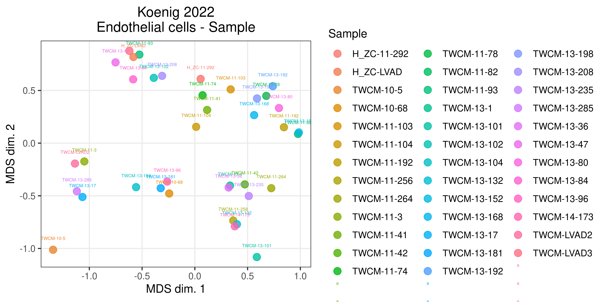
labels <- colnames(metadata_Koenig)[2:ncol(metadata_Koenig)]
plots <- list()
for (i in 1:length(labels)) {
plots[[i]] <- ggplot(mds_df, aes(x, y, col = .data[[labels[i]]])) +
geom_point(size = 3, alpha = 0.8) +
labs(x = "MDS dim. 1", y = "MDS dim. 2") +
ggtitle(paste0("Koenig 2022\nEndothelial cells - ", labels[[i]])) +
theme_bw() +
theme(panel.grid.minor = element_blank(), plot.title = element_text(hjust = 0.5)) +
coord_fixed() +
guides(color = guide_legend(ncol = 1, title = labels[[i]]))
}
combined_plots <- (plots[[1]] + plots[[2]] + plots[[3]] + plots[[4]] + plots[[5]] + plots[[6]]) + plot_layout(nrow = 2)
combined_plots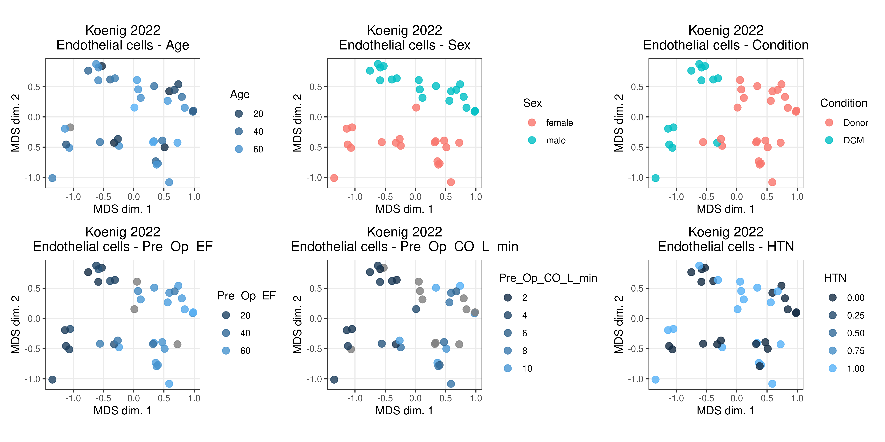
fit <- glmQLFit(pseudocounts_Koenig, design, robust=TRUE)
fit <- glmQLFTest(fit, coef = 2)
results_Koenig <- topTags(fit, n = Inf)$table
results_Koenig <- merge(results_Koenig, percent_stats[, c("gene", "percentCells")], by = "gene", all.x = FALSE)
results_Koenig$metric <- results_Koenig$logFC*-log10(results_Koenig$PValue)
signif_Koenig <- results_Koenig %>%
dplyr::filter(FDR < 0.05) %>%
dplyr::filter(abs(logFC) > 0.5) %>%
arrange(desc(metric))
write.csv(results_Koenig, file = here::here(output_dir_data, "EC_DE_Results_Koenig.csv"), quote=F, row.names = F)
write.csv(signif_Koenig, file = here::here(output_dir_data, "EC_DE_Signif_Koenig.csv"), quote=F, row.names = F)
rm(mds, mds_df, design, fit)reorder_GO_by_pvalue <- function(enrichGO_result) {
go_results <- enrichGO_result@result
go_results_sorted <- go_results[order(go_results$p.adjust), ]
enrichGO_result@result <- go_results_sorted
return(enrichGO_result)
}gene_counts <- rowSums(Koenig_EC@assays$RNA@counts > 0)
universe_genes <- names(gene_counts[gene_counts >= 3])
universe_entrez <- bitr(universe_genes, fromType = "SYMBOL", toType = "ENTREZID", OrgDb = org.Hs.eg.db)$ENTREZID
rm(gene_counts)
ranked_genes <- results_Koenig
entrezid <- bitr(ranked_genes$gene, fromType="SYMBOL", toType="ENTREZID", OrgDb="org.Hs.eg.db", drop = TRUE)
ranked_genes <- merge(ranked_genes, entrezid, by.x = "gene", by.y = "SYMBOL")
ranked_genes <- ranked_genes[!duplicated(ranked_genes$metric), ]
write.csv(ranked_genes, file = here::here(output_dir_data, "Koenig_EC_ranked_genes.csv"), quote=F, row.names = F)
genelist <- ranked_genes$metric
names(genelist) <- ranked_genes$ENTREZID
genelist <- genelist[order(genelist, decreasing = T)]
GSEA_Koenig <- gseGO(geneList = genelist,
OrgDb = org.Hs.eg.db,
ont = "ALL",
keyType = "ENTREZID",
nPermSimple = 10000,
minGSSize = 10,
eps = 0)
GSEA_Koenig@result <- GSEA_Koenig@result %>%
filter(str_count(core_enrichment, "/") >= 4)
GSEA_Koenig <- setReadable(GSEA_Koenig, OrgDb = "org.Hs.eg.db")
GSEA_Koenig <- reorder_GO_by_pvalue(GSEA_Koenig)
rm(universe_genes, universe_entrez, up_genes, down_genes)GSEA_simplified <- clusterProfiler::simplify(
GSEA_Koenig,
cutoff = 0.8,
by = "p.adjust",
select_fun = min,
measure = "Wang",
semData = NULL
)
GSEA_simplified <- reorder_GO_by_pvalue(GSEA_simplified)
dotplot(GSEA_simplified, showCategory = 7, split=".sign", title = paste0("Koenig 2022 - Endothelial cells", "\nGO Enrichment Analysis", "\nDCM vs HC"),
label_format = 35, font.size = 15) +
theme(plot.title = element_text( face = "bold", size = 18, hjust = 0.5),
axis.text.y = element_text(face = "bold"),
strip.text = element_text(face = "bold", size = 18)) +
facet_grid(.~.sign)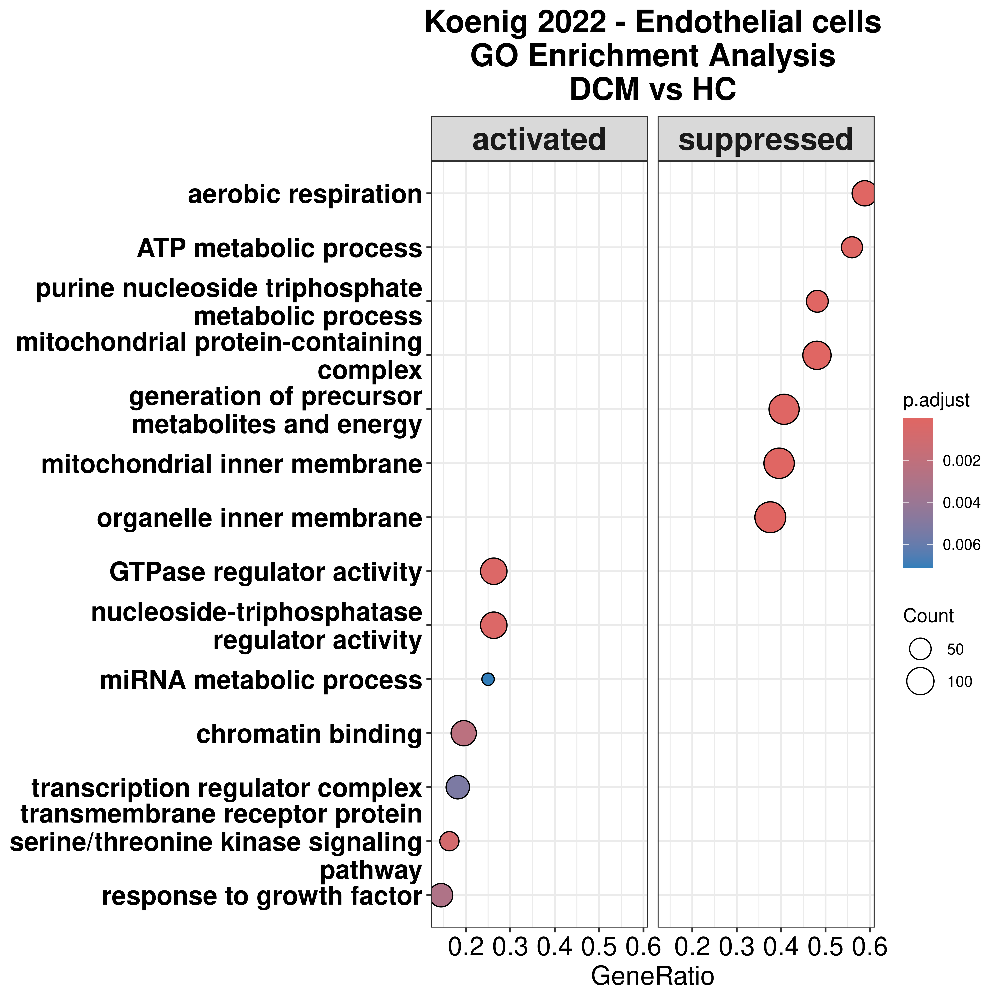
classify_terms <- function(df) {
df$sign <- ifelse(df$NES > 0, "activated", "suppressed")
return(df)
}
GSEA_simplified@result <- classify_terms(GSEA_simplified@result)
# Split the GSEA results
activated_terms <- subset(GSEA_simplified@result, sign == "activated")
suppressed_terms <- subset(GSEA_simplified@result, sign == "suppressed")
# Create two separate enrichResult objects
gsea_activated <- GSEA_simplified
gsea_activated@result <- activated_terms
gsea_suppressed <- GSEA_simplified
gsea_suppressed@result <- suppressed_terms
# Plot activated terms
p1 <- emapplot(pairwise_termsim(gsea_activated), showCategory = 50, cex_label_category = 0.7, min_edge = 0.15) +
ggtitle("Activated Terms") +
theme(plot.title = element_text(face = "bold", size = 18, hjust = 0.5))
# Plot suppressed terms
p2 <- emapplot(pairwise_termsim(gsea_suppressed), showCategory = 50, cex_label_category = 0.7, min_edge = 0.15) +
ggtitle("Suppressed Terms") +
theme(plot.title = element_text(face = "bold", size = 18, hjust = 0.5))
# Combine the plots
combined_plot <- p1 | p2
print(combined_plot)
gseaGO_up_terms <- dplyr::filter(GSEA_Koenig@result, NES > 0)
table(gseaGO_up_terms$ONTOLOGY)
BP CC MF
31 1 11 gseaGO_up_terms <- gseaGO_up_terms$ID
mat1 = GO_similarity(gseaGO_up_terms, ont = "BP")
BP <- simplifyGO(mat1, column_title = "31 GO Biological Process terms")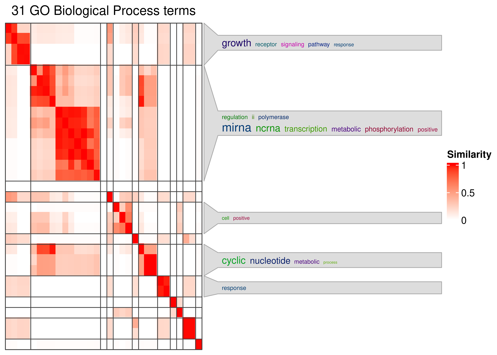
mat2 = GO_similarity(gseaGO_up_terms, ont = "MF")
MF <- simplifyGO(mat2, column_title = "11 GO Molecular Function terms")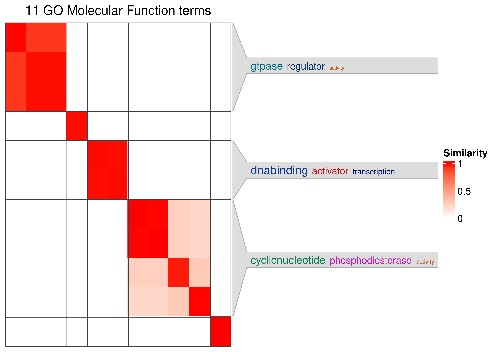
mat3 = GO_similarity(gseaGO_up_terms, ont = "CC")
#CC <- simplifyGO(mat3, column_title = "11 GO Cellular Component terms")gseaGO_down_terms <- dplyr::filter(GSEA_Koenig@result, NES < 0)
table(gseaGO_down_terms$ONTOLOGY)
BP CC MF
55 35 18 gseaGO_down_terms <- gseaGO_down_terms$ID
mat1 = GO_similarity(gseaGO_down_terms, ont = "BP")
BP <- simplifyGO(mat1, column_title = "55 GO Biological Process terms")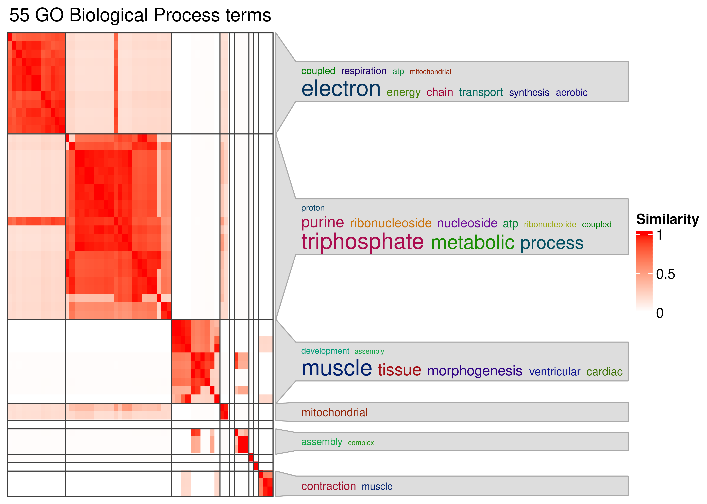
mat2 = GO_similarity(gseaGO_down_terms, ont = "MF")
MF <- simplifyGO(mat2, column_title = "35 GO Molecular Function terms")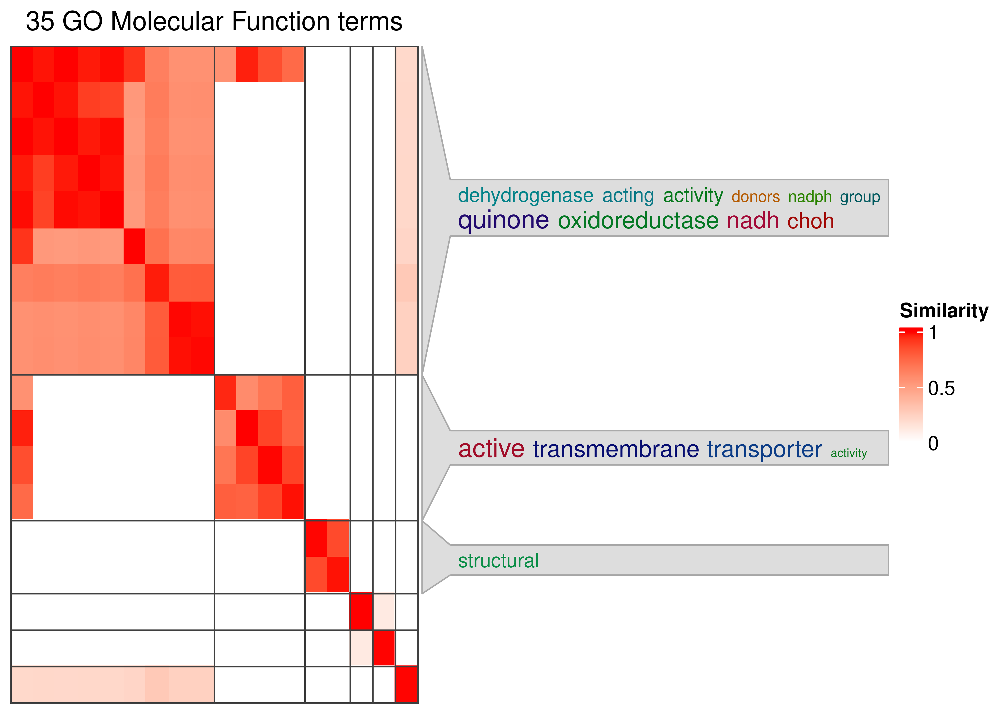
mat3 = GO_similarity(gseaGO_down_terms, ont = "CC")
CC <- simplifyGO(mat3, column_title = "18 GO Cellular Component terms")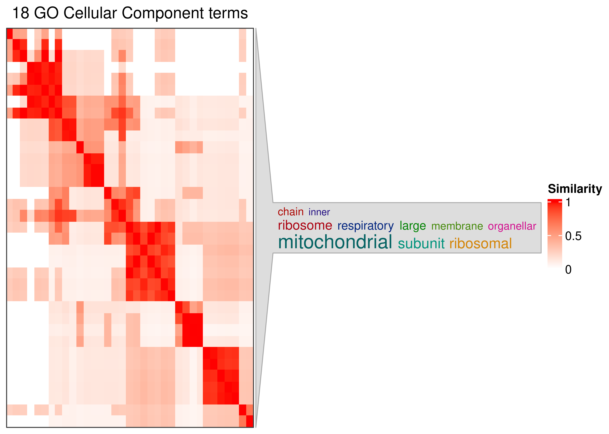
GSEA_KEGG_Koenig <- gseKEGG(geneList = genelist,
organism = "hsa",
keyType = "kegg",
nPermSimple = 10000,
minGSSize = 10,
eps = 0)
GSEA_KEGG_Koenig <- reorder_GO_by_pvalue(GSEA_KEGG_Koenig)GSEA_KEGG_Koenig@result <- GSEA_KEGG_Koenig@result %>%
filter(str_count(core_enrichment, "/") >= 4)
GSEA_KEGG_Koenig <- reorder_GO_by_pvalue(GSEA_KEGG_Koenig)
dotplot(GSEA_KEGG_Koenig, showCategory = 7, split=".sign", title = paste0("Koenig 2022 - Endothelial cells", "\nKEGG Pathways Enrichment Analysis", "\nDCM vs HC"),
label_format = 35, font.size = 15) +
theme(plot.title = element_text( face = "bold", size = 18, hjust = 0.5),
axis.text.y = element_text(face = "bold"),
strip.text = element_text(face = "bold", size = 18)) +
facet_grid(.~.sign)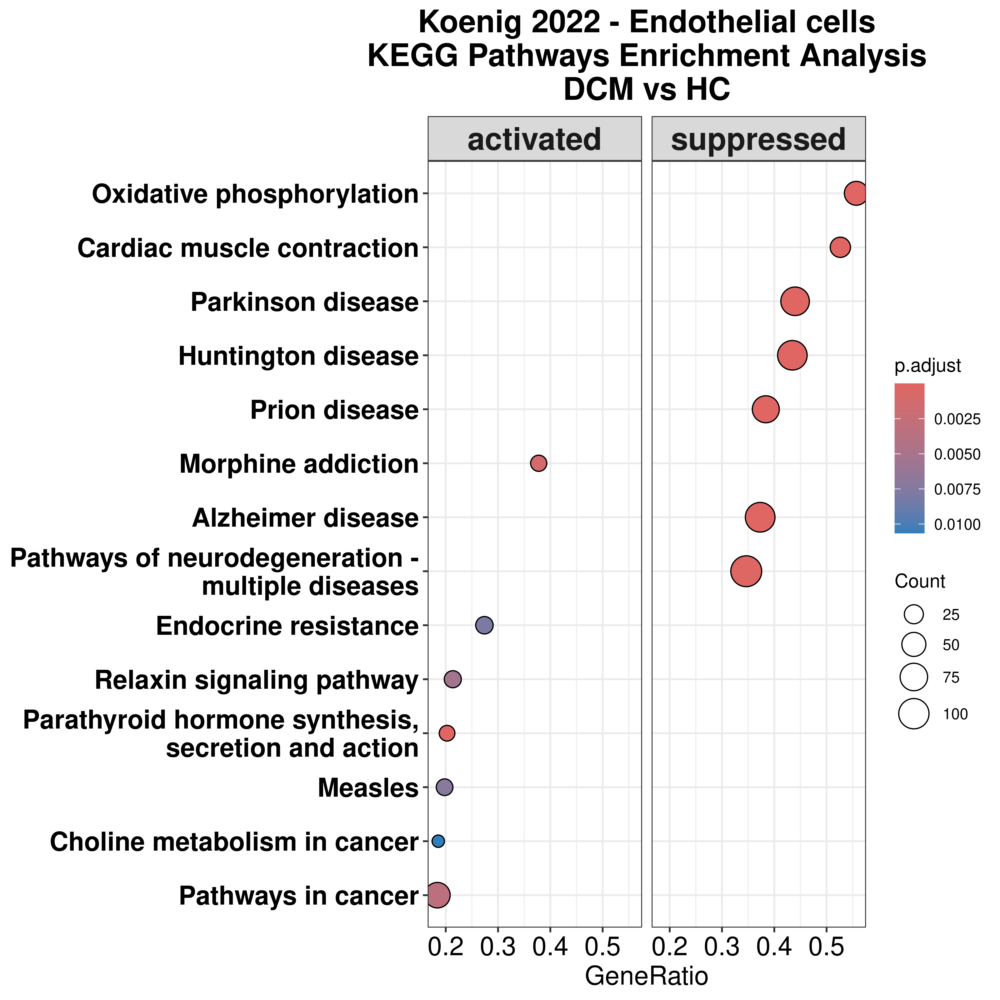
GSEA_simplified <- GSEA_KEGG_Koenig
GSEA_simplified@result <- classify_terms(GSEA_simplified@result)
# Split the GSEA results
activated_terms <- subset(GSEA_simplified@result, sign == "activated")
suppressed_terms <- subset(GSEA_simplified@result, sign == "suppressed")
# Create two separate enrichResult objects
gsea_activated <- GSEA_simplified
gsea_activated@result <- activated_terms
gsea_suppressed <- GSEA_simplified
gsea_suppressed@result <- suppressed_terms
# Plot activated terms
p1 <- emapplot(pairwise_termsim(gsea_activated), showCategory = 50, cex_label_category = 0.7, min_edge = 0.15) +
ggtitle("Activated Terms") +
theme(plot.title = element_text(face = "bold", size = 18, hjust = 0.5))
# Plot suppressed terms
p2 <- emapplot(pairwise_termsim(gsea_suppressed), showCategory = 50, cex_label_category = 0.7, min_edge = 0.15) +
ggtitle("Suppressed Terms") +
theme(plot.title = element_text(face = "bold", size = 18, hjust = 0.5))
# Combine the plots
combined_plot <- p1 | p2
print(combined_plot)
metadata_heatmap <- metadata_Koenig %>%
dplyr::select(orig.ident, Sex, Pre_Op_EF, Condition)
sig_counts <- counts_Koenig[rownames(counts_Koenig) %in% signif_Koenig$gene, ]
heat_colors <- rev(brewer.pal(11, "PuOr"))
## Run pheatmap using the metadata data frame for the annotation
pheatmap::pheatmap(sig_counts,
color = heat_colors,
cluster_rows = TRUE,
scale = "row",
show_rownames = FALSE,
annotation_col = metadata_heatmap,
border_color = NA,
fontsize = 10,
cluster_cols=TRUE,
fontsize_row = 10,
height = 20) 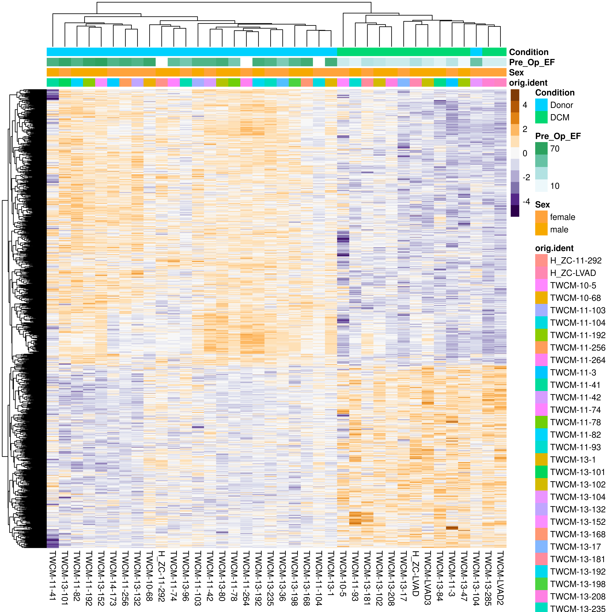
DEGs_top_up <- signif_Koenig %>%
dplyr::arrange(desc(metric))
DEGs_top_down <- signif_Koenig %>%
dplyr::arrange(metric)
DEGs_top <- dplyr::bind_rows(head(DEGs_top_up, 20), head(DEGs_top_down, 20))
sig_counts <- counts_Koenig[rownames(counts_Koenig) %in% DEGs_top$gene, ]
sig_counts <- sig_counts[match(DEGs_top$gene, rownames(sig_counts)), ]
heat_colors <- rev(brewer.pal(11, "PuOr"))
## Run pheatmap using the metadata data frame for the annotation
pheatmap::pheatmap(sig_counts,
color = heat_colors,
cluster_rows = FALSE,
scale = "row",
show_rownames = TRUE,
annotation_col = metadata_heatmap,
border_color = NA,
fontsize = 10,
cluster_cols=TRUE,
fontsize_row = 10,
height = 20) 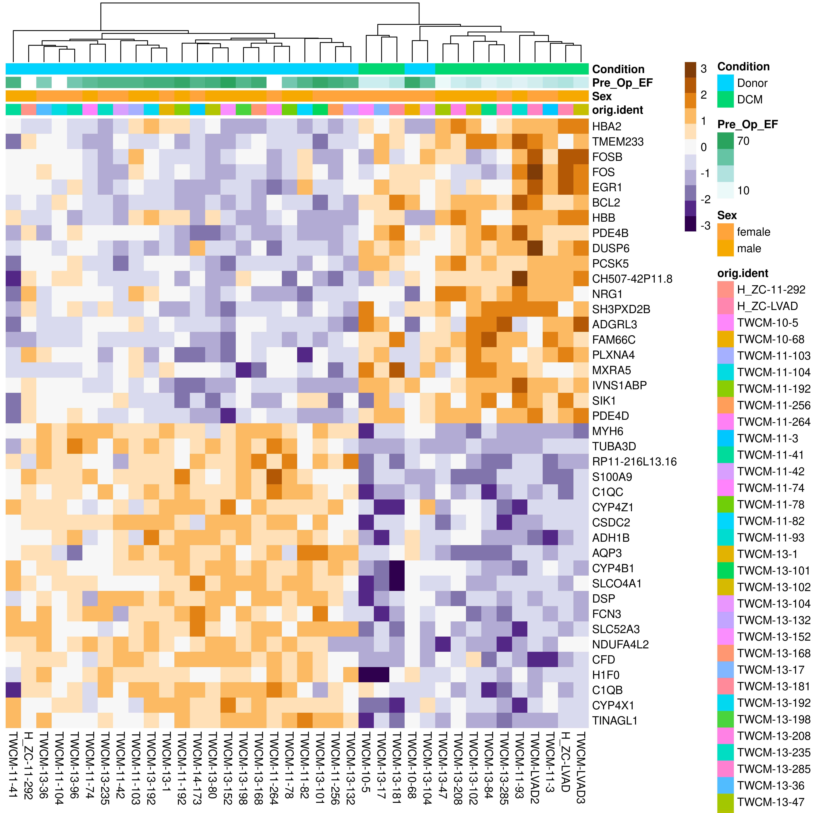
rm(activated_terms, BP, CC, combined_plot, combined_plots, DEGs_top, DEGs_top_down, DEGs_top_up, entrezid, gsea_activated, GSEA_simplified, gsea_suppressed, mat1, mat2, mat3, metadata_heatmap, MF, p1, p2, percent_stats, plots, sig_counts, suppressed_terms, genelist, gseaGO_down_terms, gseaGO_up_terms, i, labels)Chaffin 2022
Chaffin <- readRDS("/scratch/gbonaz/Heart_datasets/Chaffin_2022/Chaffin_2022.rds")Chaffin_EC <- subset(Chaffin, cell_type_leiden0.6 %in% c("Endothelial_I", "Endothelial_II", "Endothelial_III"))
Chaffin_EC <- subset(Chaffin_EC, disease %in% c("DCM", "NF"))
Chaffin_EC$cell_type <- "Endothelial cells"Clinical_data <- read_excel("/scratch/gbonaz/Heart_datasets/Chaffin_2022/Chaffin_et al_2022_Selected_clinical_info.xlsx")
add_metadata <- left_join(Chaffin_EC[["donor_id"]], Clinical_data)
row.names(add_metadata) <- row.names(Chaffin_EC[[]])
Chaffin_EC <- AddMetaData(Chaffin_EC, metadata = add_metadata)
rm(add_metadata, Clinical_data)metadata_Chaffin <- Chaffin_EC@meta.data %>%
dplyr::select(donor_id, disease, sex, age, lvef, Body_Mass_Index_kg_m2, Heart_Weight_g, Left_Ventricular_Mass_g, Left_Ventricular_Mass_Index_g_m2, Left_Ventricular_End_Systolic_Dimension_cm, Left_Ventricular_End_Diastolic_Dimension_cm, Posterior_Wall_Thickness_cm) %>%
unique()
rownames(metadata_Chaffin) <- metadata_Chaffin$donor_id
reactable(metadata_Chaffin,
filterable = TRUE,
searchable = TRUE,
showPageSizeOptions = TRUE)expr_matrix <- GetAssayData(object = Chaffin_EC, assay = "RNA", slot = "counts")
non_zero_cells <- rowSums(expr_matrix > 0)
total_cells <- ncol(expr_matrix)
percent_cells <- (non_zero_cells / total_cells) * 100
percent_stats <- data.frame(gene = rownames(expr_matrix), percentCells = percent_cells)
keep_genes <- rownames(dplyr::filter(percent_stats, percentCells > 1))
data <- Chaffin_EC[which(rownames(Chaffin_EC) %in% keep_genes),]
pseudocounts_Chaffin <- Seurat2PB(data, sample="donor_id", cluster = "cell_type")
colnames(pseudocounts_Chaffin) <- pseudocounts_Chaffin$samples$sample
pseudocounts_Chaffin <- pseudocounts_Chaffin[, match(metadata_Chaffin$donor_id, pseudocounts_Chaffin$samples$sample)]
all(metadata_Chaffin$donor_id == pseudocounts_Chaffin$samples$sample)[1] TRUEkeep_samples <- pseudocounts_Chaffin$samples$lib.size > 5e4
pseudocounts_Chaffin <- pseudocounts_Chaffin[, keep_samples]
metadata_Chaffin$disease <- factor(metadata_Chaffin$disease, levels = c("NF", "DCM"))
design<- model.matrix(~ disease, data = metadata_Chaffin)
keep_genes <- filterByExpr(pseudocounts_Chaffin, design = design)
pseudocounts_Chaffin <- pseudocounts_Chaffin[keep_genes, ]
pseudocounts_Chaffin <- normLibSizes(pseudocounts_Chaffin)
counts_Chaffin <- edgeR::cpm(pseudocounts_Chaffin, log = TRUE)
pseudocounts_Chaffin <- estimateDisp(pseudocounts_Chaffin, design)
rm(expr_matrix, non_zero_cells, total_cells, percent_cells, keep_genes, data, keep_samples)mds <- plotMDS(pseudocounts_Chaffin, plot = FALSE)
mds_df <- cbind(data.frame(mds[c("x", "y")]), metadata_Chaffin)ggplot(mds_df, aes(x, y, col = donor_id, label = donor_id)) +
geom_point(size = 3, alpha = 0.8) +
labs(x = "MDS dim. 1", y = "MDS dim. 2") +
geom_text(vjust = -3, hjust = 0.5, size = 1.5) +
ggtitle("Chaffin 2022\nEndothelial cells - Sample") +
theme_bw() +
theme(panel.grid.minor = element_blank(),
plot.title = element_text(hjust = 0.5)) +
coord_fixed() +
guides(color = guide_legend(ncol = 3, title = "Sample"))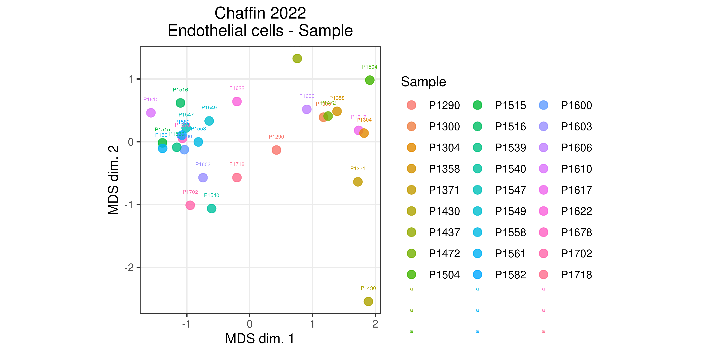
labels <- colnames(metadata_Chaffin)[2:ncol(metadata_Chaffin)]
plots <- list()
for (i in 1:length(labels)) {
plots[[i]] <- ggplot(mds_df, aes(x, y, col = .data[[labels[i]]])) +
geom_point(size = 3, alpha = 0.8) +
labs(x = "MDS dim. 1", y = "MDS dim. 2") +
ggtitle(paste0("Chaffin 2022\nEndothelial cells\n", labels[[i]])) +
theme_bw() +
theme(panel.grid.minor = element_blank(), plot.title = element_text(hjust = 0.5, size = 10)) +
coord_fixed() +
guides(color = guide_legend(ncol = 1, title = element_blank()))
}
combined_plots <- (plots[[1]] + plots[[2]] + plots[[3]] + plots[[4]] + plots[[5]] + plots[[6]] + plots[[7]] + plots[[8]] + plots[[9]] + plots[[10]] + plots[[11]]) + plot_layout(nrow = 3)
combined_plots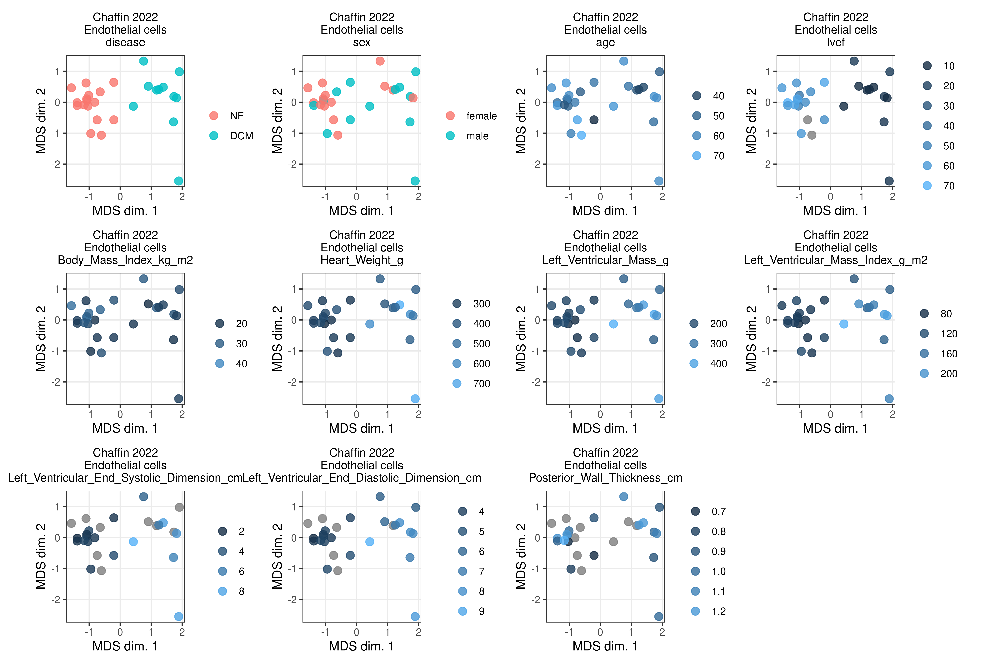
fit <- glmQLFit(pseudocounts_Chaffin, design, robust=TRUE)
fit <- glmQLFTest(fit, coef = 2)
results_Chaffin <- topTags(fit, n = Inf)$table
results_Chaffin <- merge(results_Chaffin, percent_stats[, c("gene", "percentCells")], by = "gene", all.x = FALSE)
results_Chaffin$metric <- results_Chaffin$logFC*-log10(results_Chaffin$PValue)
signif_Chaffin <- results_Chaffin %>%
dplyr::filter(FDR < 0.05) %>%
dplyr::filter(abs(logFC) > 0.5) %>%
arrange(desc(metric))
write.csv(results_Chaffin, file = here::here(output_dir_data, "EC_DE_Results_Chaffin.csv"), quote=F, row.names = F)
write.csv(signif_Chaffin, file = here::here(output_dir_data, "EC_DE_Signif_Chaffin.csv"), quote=F, row.names = F)
rm(mds, mds_df, design, fit)gene_counts <- rowSums(Chaffin_EC@assays$RNA@counts > 0)
universe_genes <- names(gene_counts[gene_counts >= 3])
universe_entrez <- bitr(universe_genes, fromType = "SYMBOL", toType = "ENTREZID", OrgDb = org.Hs.eg.db)$ENTREZID
rm(gene_counts)
ranked_genes <- results_Chaffin
entrezid <- bitr(ranked_genes$gene, fromType="SYMBOL", toType="ENTREZID", OrgDb="org.Hs.eg.db", drop = TRUE)
ranked_genes <- merge(ranked_genes, entrezid, by.x = "gene", by.y = "SYMBOL")
ranked_genes <- ranked_genes[!duplicated(ranked_genes$metric), ]
write.csv(ranked_genes, file = here::here(output_dir_data, "Chaffin_EC_ranked_genes.csv"), quote=F, row.names = F)
genelist <- ranked_genes$metric
names(genelist) <- ranked_genes$ENTREZID
genelist <- genelist[order(genelist, decreasing = T)]
GSEA_Chaffin <- gseGO(geneList = genelist,
OrgDb = org.Hs.eg.db,
ont = "ALL",
keyType = "ENTREZID",
nPermSimple = 10000,
minGSSize = 10,
pvalueCutoff = 0.2,
eps = 0)
GSEA_Chaffin@result <- GSEA_Chaffin@result %>%
filter(str_count(core_enrichment, "/") >= 4)
GSEA_Chaffin <- setReadable(GSEA_Chaffin, OrgDb = "org.Hs.eg.db")
GSEA_Chaffin <- reorder_GO_by_pvalue(GSEA_Chaffin)
rm(universe_genes, universe_entrez)GSEA_simplified <- clusterProfiler::simplify(
GSEA_Chaffin,
cutoff = 0.8,
by = "p.adjust",
select_fun = min,
measure = "Wang",
semData = NULL
)
GSEA_simplified@result <- GSEA_simplified@result %>%
filter(str_count(core_enrichment, "/") >= 4)
GSEA_simplified <- reorder_GO_by_pvalue(GSEA_simplified)
dotplot(GSEA_simplified, showCategory = 7, split=".sign", title = paste0("Chaffin 2022 - Endothelial cells", "\nGO Enrichment Analysis", "\nDCM vs HC"),
label_format = 35, font.size = 15) +
theme(plot.title = element_text( face = "bold", size = 18, hjust = 0.5),
axis.text.y = element_text(face = "bold"),
strip.text = element_text(face = "bold", size = 18)) +
facet_grid(.~.sign)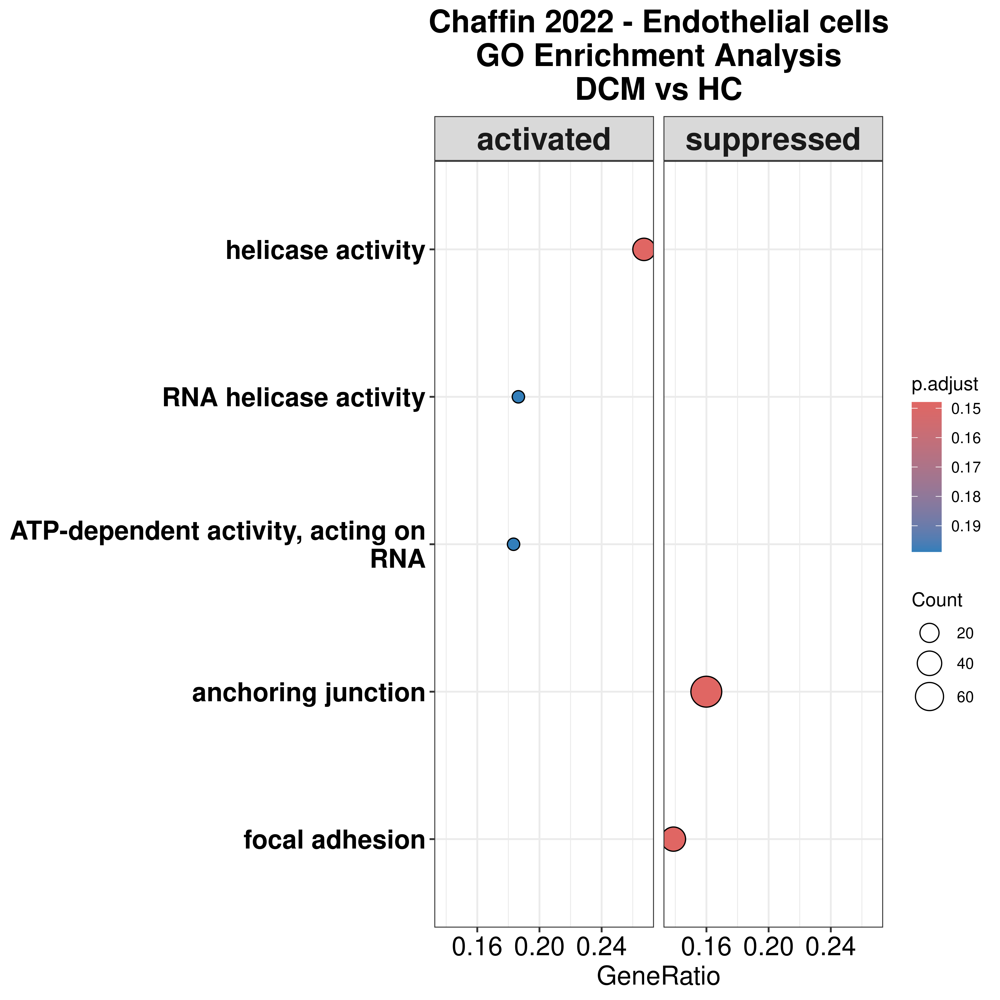
classify_terms <- function(df) {
df$sign <- ifelse(df$NES > 0, "activated", "suppressed")
return(df)
}
GSEA_simplified@result <- classify_terms(GSEA_simplified@result)
# Split the GSEA results
activated_terms <- subset(GSEA_simplified@result, sign == "activated")
suppressed_terms <- subset(GSEA_simplified@result, sign == "suppressed")
# Create two separate enrichResult objects
gsea_activated <- GSEA_simplified
gsea_activated@result <- activated_terms
gsea_suppressed <- GSEA_simplified
gsea_suppressed@result <- suppressed_terms
# Plot activated terms
p1 <- emapplot(pairwise_termsim(gsea_activated), showCategory = 50, cex_label_category = 0.7, min_edge = 0.15) +
ggtitle("Activated Terms") +
theme(plot.title = element_text(face = "bold", size = 18, hjust = 0.5))
# Plot suppressed terms
p2 <- emapplot(pairwise_termsim(gsea_suppressed), showCategory = 50, cex_label_category = 0.7, min_edge = 0.15) +
ggtitle("Suppressed Terms") +
theme(plot.title = element_text(face = "bold", size = 18, hjust = 0.5))
# Combine the plots
combined_plot <- p1 | p2
print(combined_plot)
gseaGO_up_terms <- dplyr::filter(GSEA_Chaffin@result, NES > 0)
table(gseaGO_up_terms$ONTOLOGY)
gseaGO_up_terms <- gseaGO_up_terms$ID
#mat1 = GO_similarity(gseaGO_up_terms, ont = "BP")
#BP <- simplifyGO(mat1, column_title = "33 GO Biological Process terms")
#mat2 = GO_similarity(gseaGO_up_terms, ont = "MF")
#MF <- simplifyGO(mat2, column_title = "2 GO Molecular Function terms")
#mat3 = GO_similarity(gseaGO_up_terms, ont = "CC")
#CC <- simplifyGO(mat3, column_title = "11 GO Cellular Component terms")#gseaGO_down_terms <- dplyr::filter(GSEA@result, NES < 0)
#table(gseaGO_down_terms$ONTOLOGY)
#gseaGO_down_terms <- gseaGO_down_terms$ID
#mat1 = GO_similarity(gseaGO_down_terms, ont = "BP")
#BP <- simplifyGO(mat1, column_title = "58 GO Biological Process terms")
#mat2 = GO_similarity(gseaGO_down_terms, ont = "MF")
#MF <- simplifyGO(mat2, column_title = "36 GO Molecular Function terms")
#mat3 = GO_similarity(gseaGO_down_terms, ont = "CC")
#CC <- simplifyGO(mat3, column_title = "19 GO Cellular Component terms")GSEA_KEGG_Chaffin <- gseKEGG(geneList = genelist,
organism = "hsa",
keyType = "kegg",
nPermSimple = 10000,
minGSSize = 10,
eps = 0,
pvalueCutoff = 0.2)
GSEA_KEGG_Chaffin <- reorder_GO_by_pvalue(GSEA_KEGG_Chaffin)GSEA_KEGG_Chaffin@result <- GSEA_KEGG_Chaffin@result %>%
filter(str_count(core_enrichment, "/") >= 4)
GSEA_KEGG_Chaffin <- reorder_GO_by_pvalue(GSEA_KEGG_Chaffin)
dotplot(GSEA_KEGG_Chaffin, showCategory = 7, split=".sign", title = paste0("Chaffin 2022 - Endothelial cells", "\nKEGG Pathways Enrichment Analysis", "\nDCM vs HC"),
label_format = 35, font.size = 15) +
theme(plot.title = element_text( face = "bold", size = 18, hjust = 0.5),
axis.text.y = element_text(face = "bold"),
strip.text = element_text(face = "bold", size = 18)) +
facet_grid(.~.sign)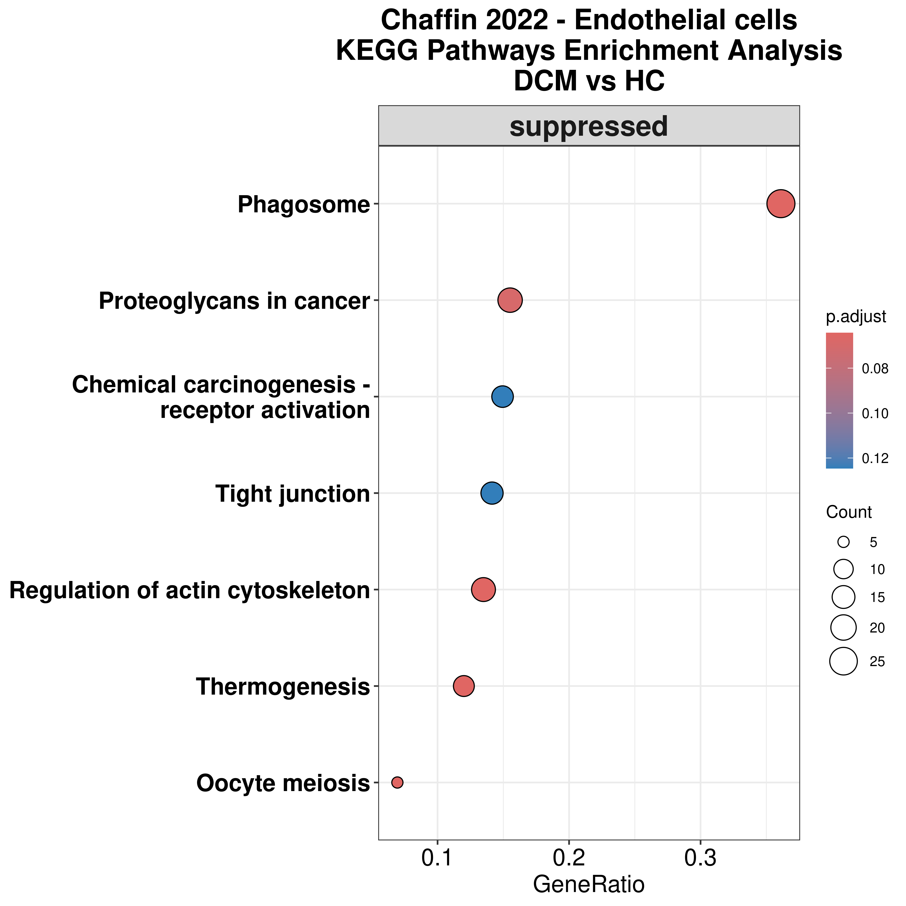
GSEA_simplified <- GSEA_KEGG_Chaffin
GSEA_simplified@result <- classify_terms(GSEA_simplified@result)
# Split the GSEA results
activated_terms <- subset(GSEA_simplified@result, sign == "activated")
suppressed_terms <- subset(GSEA_simplified@result, sign == "suppressed")
# Create two separate enrichResult objects
gsea_activated <- GSEA_simplified
gsea_activated@result <- activated_terms
gsea_suppressed <- GSEA_simplified
gsea_suppressed@result <- suppressed_terms
# Plot suppressed terms
p2 <- emapplot(pairwise_termsim(gsea_suppressed), showCategory = 50, cex_label_category = 0.7, min_edge = 0.15) +
ggtitle("Suppressed Terms") +
theme(plot.title = element_text(face = "bold", size = 18, hjust = 0.5))
# Combine the plots
combined_plot <- p2
print(combined_plot)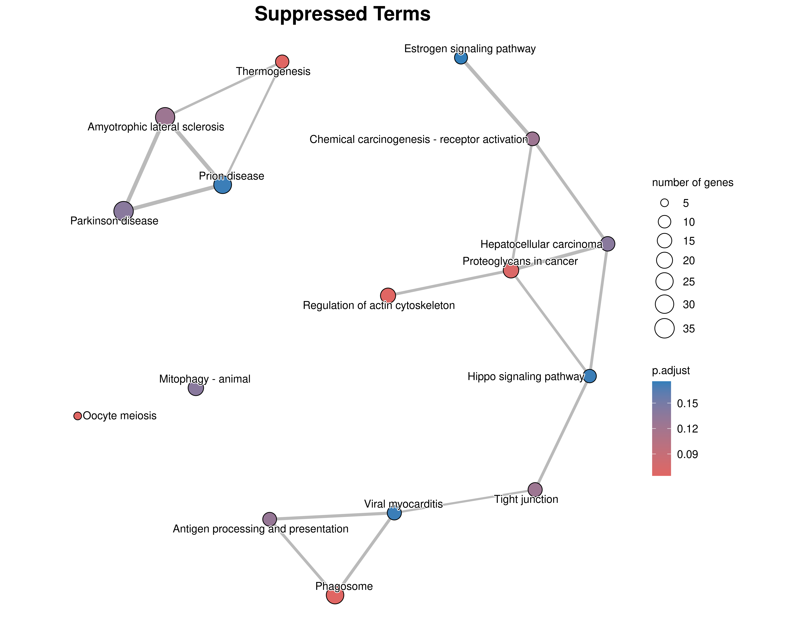
metadata_heatmap <- metadata_Chaffin %>%
dplyr::select(donor_id, sex, lvef, disease)
sig_counts <- counts_Chaffin[rownames(counts_Chaffin) %in% signif_Chaffin$gene, ]
heat_colors <- rev(brewer.pal(11, "PuOr"))
## Run pheatmap using the metadata data frame for the annotation
pheatmap::pheatmap(sig_counts,
color = heat_colors,
cluster_rows = TRUE,
scale = "row",
show_rownames = FALSE,
annotation_col = metadata_heatmap,
border_color = NA,
fontsize = 10,
cluster_cols=TRUE,
fontsize_row = 10,
height = 20) 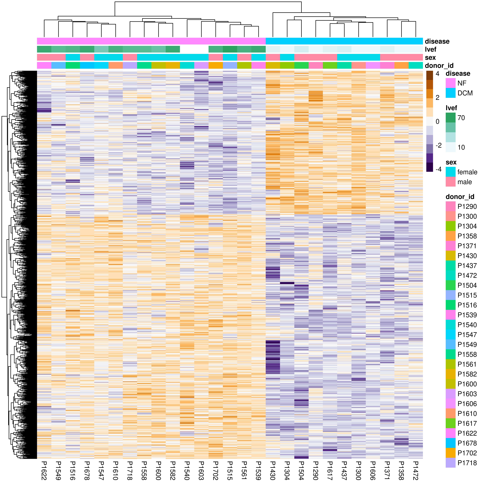
DEGs_top_up <- signif_Chaffin %>%
dplyr::arrange(desc(metric))
DEGs_top_down <- signif_Chaffin %>%
dplyr::arrange(metric)
DEGs_top <- dplyr::bind_rows(head(DEGs_top_up, 20), head(DEGs_top_down, 20))
sig_counts <- counts_Chaffin[rownames(counts_Chaffin) %in% DEGs_top$gene, ]
sig_counts <- sig_counts[match(DEGs_top$gene, rownames(sig_counts)), ]
heat_colors <- rev(brewer.pal(11, "PuOr"))
## Run pheatmap using the metadata data frame for the annotation
pheatmap::pheatmap(sig_counts,
color = heat_colors,
cluster_rows = FALSE,
scale = "row",
show_rownames = TRUE,
annotation_col = metadata_heatmap,
border_color = NA,
fontsize = 10,
cluster_cols=TRUE,
fontsize_row = 10,
height = 20) 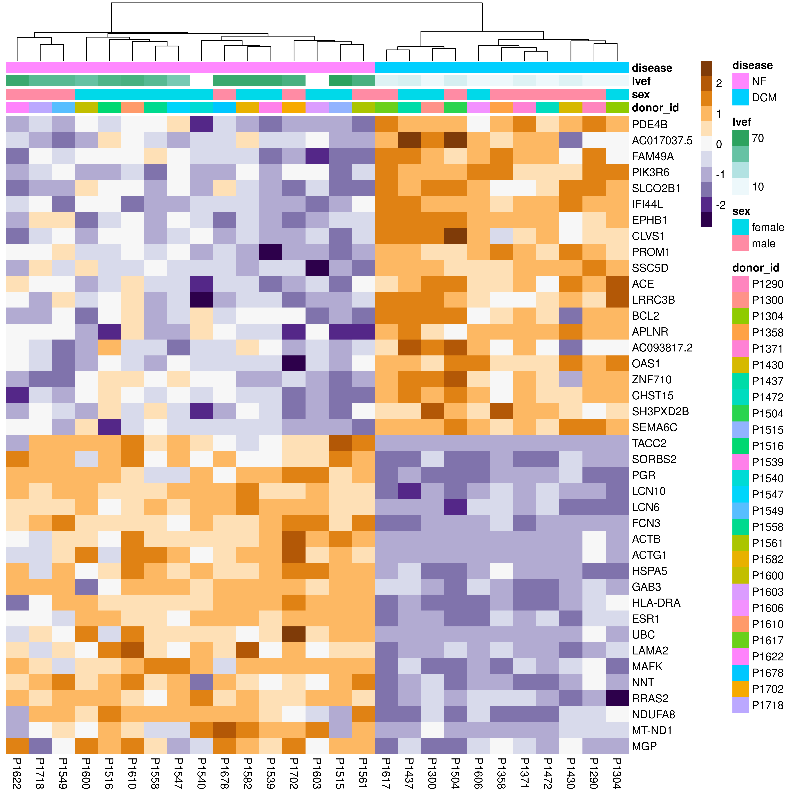
rm(activated_terms, BP, CC, combined_plot, combined_plots, DEGs_top, DEGs_top_down, DEGs_top_up, entrezid, gsea_activated, GSEA_simplified, gsea_suppressed, mat1, mat2, mat3, metadata_heatmap, MF, p1, p2, percent_stats, plots, sig_counts, suppressed_terms, genelist, gseaGO_down_terms, gseaGO_up_terms, i, labels)Reichart 2022
Reichart <- readRDS("/scratch/gbonaz/Heart_datasets/Reichart_2022/DCM_ACM_heart_cell_atlas.rds")
Reichart_gene_names <- data.frame(
ensembl_id = rownames(Reichart),
gene_symbol = Reichart@assays[["RNA"]]@meta.features$feature_name
)
rownames(Reichart@assays[["RNA"]]@data) <- Reichart@assays[["RNA"]]@meta.features$feature_name
rownames(Reichart@assays[["RNA"]]@counts) <- Reichart@assays[["RNA"]]@meta.features$feature_name
Idents(Reichart) <- Reichart$cell_typeClinical_data <- read_excel("/scratch/gbonaz/Heart_datasets/Reichart_2022/Reichart_et_al_Science_2022_Selected_clinical_info.xlsx")
add_metadata <- left_join(Reichart[["donor_id"]], Clinical_data)
row.names(add_metadata) <- row.names(Reichart[[]])
Reichart <- AddMetaData(Reichart, metadata = add_metadata)
rm(add_metadata, Clinical_data)Reichart_EC <- subset(Reichart, cell_type == "endothelial cell" & disease %in% c("dilated cardiomyopathy", "normal") & Region_x == "LV")
table(Reichart_EC$cell_type, Reichart_EC$disease)
non-compaction cardiomyopathy
mast cell 0
endothelial cell 0
adipocyte 0
lymphocyte 0
cardiac muscle cell 0
myeloid cell 0
fibroblast of cardiac tissue 0
mural cell 0
cardiac neuron 0
unknown 0
dilated cardiomyopathy
mast cell 0
endothelial cell 58449
adipocyte 0
lymphocyte 0
cardiac muscle cell 0
myeloid cell 0
fibroblast of cardiac tissue 0
mural cell 0
cardiac neuron 0
unknown 0
arrhythmogenic right ventricular cardiomyopathy
mast cell 0
endothelial cell 0
adipocyte 0
lymphocyte 0
cardiac muscle cell 0
myeloid cell 0
fibroblast of cardiac tissue 0
mural cell 0
cardiac neuron 0
unknown 0
normal
mast cell 0
endothelial cell 15787
adipocyte 0
lymphocyte 0
cardiac muscle cell 0
myeloid cell 0
fibroblast of cardiac tissue 0
mural cell 0
cardiac neuron 0
unknown 0metadata_Reichart <- Reichart_EC@meta.data %>%
dplyr::select(donor_id, disease, sex, Age_range, LVEF_percent, LVIDd_mm, LVIDs_mm, RVEDD_mm, TAPSE_mm, PAH, Hypertension, COPD) %>%
unique()
rownames(metadata_Reichart) <- metadata_Reichart$donor_id
reactable(metadata_Reichart,
filterable = TRUE,
searchable = TRUE,
showPageSizeOptions = TRUE)expr_matrix <- GetAssayData(object = Reichart_EC, assay = "RNA", slot = "counts")
non_zero_cells <- rowSums(expr_matrix > 0)
total_cells <- ncol(expr_matrix)
percent_cells <- (non_zero_cells / total_cells) * 100
percent_stats <- data.frame(gene = rownames(expr_matrix), percentCells = percent_cells)
keep_genes <- rownames(dplyr::filter(percent_stats, percentCells > 1))
data <- Reichart_EC[which(rownames(Reichart_EC) %in% keep_genes),]
pseudocounts_Reichart <- Seurat2PB(data, sample="donor_id", cluster = "cell_type")
colnames(pseudocounts_Reichart) <- pseudocounts_Reichart$samples$sample
pseudocounts_Reichart <- pseudocounts_Reichart[, match(metadata_Reichart$donor_id, pseudocounts_Reichart$samples$sample)]
all(metadata_Reichart$donor_id == pseudocounts_Reichart$samples$sample)[1] TRUEkeep_samples <- pseudocounts_Reichart$samples$lib.size > 5e4
pseudocounts_Reichart <- pseudocounts_Reichart[, keep_samples]
metadata_Reichart$disease <- factor(metadata_Reichart$disease, levels = c("normal", "dilated cardiomyopathy"))
design<- model.matrix(~ disease, data = metadata_Reichart)
keep_genes <- filterByExpr(pseudocounts_Reichart, design = design)
pseudocounts_Reichart <- pseudocounts_Reichart[keep_genes, ]
pseudocounts_Reichart <- normLibSizes(pseudocounts_Reichart)
counts_Reichart <- edgeR::cpm(pseudocounts_Reichart, log = TRUE)
pseudocounts_Reichart <- estimateDisp(pseudocounts_Reichart, design)
rm(expr_matrix, non_zero_cells, total_cells, percent_cells, keep_genes, data, keep_samples)mds <- plotMDS(pseudocounts_Reichart, plot = FALSE)
mds_df <- cbind(data.frame(mds[c("x", "y")]), metadata_Reichart)ggplot(mds_df, aes(x, y, col = donor_id, label = donor_id)) +
geom_point(size = 3, alpha = 0.8) +
labs(x = "MDS dim. 1", y = "MDS dim. 2") +
geom_text(vjust = -3, hjust = 0.5, size = 1.5) +
ggtitle("Reichart 2022\nEndothelial cells - Sample") +
theme_bw() +
theme(panel.grid.minor = element_blank(),
plot.title = element_text(hjust = 0.5)) +
coord_fixed() +
guides(color = guide_legend(ncol = 4, title = "Sample"))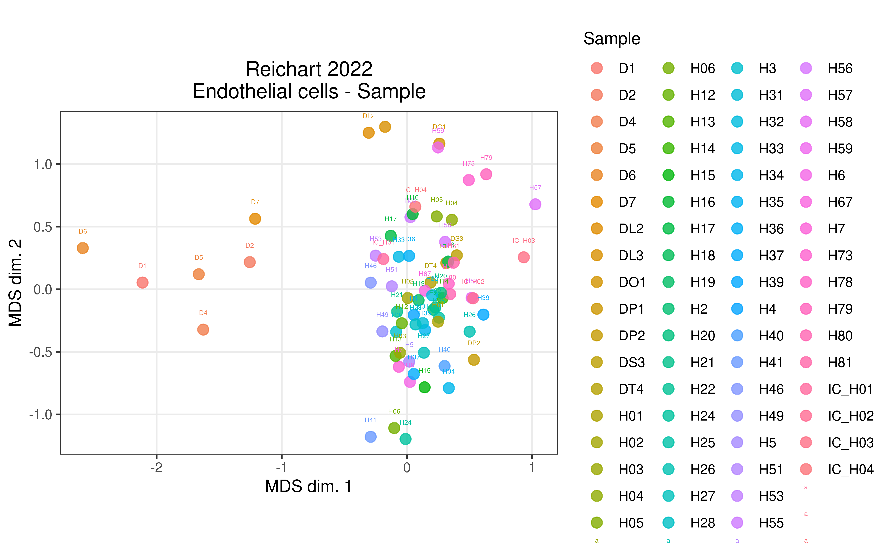
labels <- colnames(metadata_Reichart)[2:ncol(metadata_Reichart)]
plots <- list()
for (i in 1:length(labels)) {
plots[[i]] <- ggplot(mds_df, aes(x, y, col = .data[[labels[i]]])) +
geom_point(size = 3, alpha = 0.8) +
labs(x = "MDS dim. 1", y = "MDS dim. 2") +
ggtitle(paste0("Reichart 2022\nEndothelial cells\n", labels[[i]])) +
theme_bw() +
theme(panel.grid.minor = element_blank(), plot.title = element_text(hjust = 0.5, size = 10)) +
coord_fixed() +
guides(color = guide_legend(ncol = 1, title = element_blank()))
}
combined_plots <- (plots[[1]] + plots[[2]] + plots[[3]] + plots[[4]] + plots[[5]] + plots[[6]] + plots[[7]] + plots[[8]] + plots[[9]] + plots[[10]] + plots[[11]]) + plot_layout(nrow = 3)
combined_plots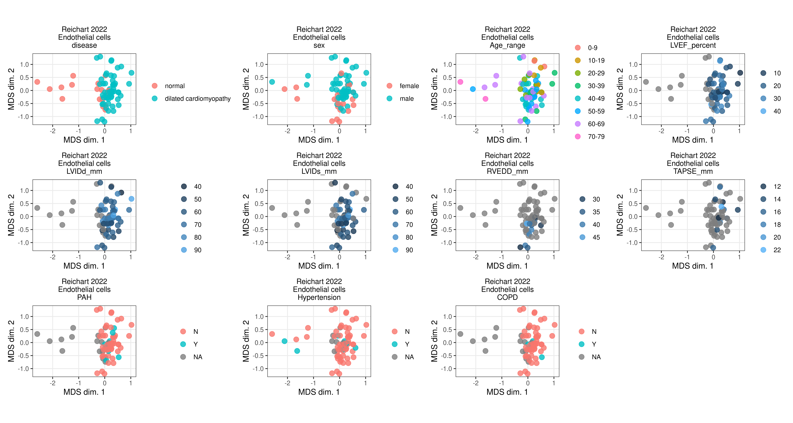
fit <- glmQLFit(pseudocounts_Reichart, design, robust=TRUE)
fit <- glmQLFTest(fit, coef = 2)
results_Reichart <- topTags(fit, n = Inf)$table
results_Reichart <- merge(results_Reichart, percent_stats[, c("gene", "percentCells")], by = "gene", all.x = FALSE)
results_Reichart$metric <- results_Reichart$logFC*-log10(results_Reichart$PValue)
results_Reichart <- results_Reichart %>%
dplyr::select(-feature_biotype, -feature_is_filtered, -feature_name, -feature_reference, -feature_length)
signif_Reichart <- results_Reichart %>%
dplyr::filter(FDR < 0.05) %>%
dplyr::filter(abs(logFC) > 0.5) %>%
arrange(desc(metric))
write.csv(results_Reichart, file = here::here(output_dir_data, "EC_DE_Results_Reichart.csv"), quote=F, row.names = F)
write.csv(signif_Reichart, file = here::here(output_dir_data, "EC_DE_Signif_Reichart.csv"), quote=F, row.names = F)
rm(mds, mds_df, design, fit)gene_counts <- rowSums(Reichart_EC@assays$RNA@counts > 0)
universe_genes <- names(gene_counts[gene_counts >= 3])
universe_entrez <- bitr(universe_genes, fromType = "SYMBOL", toType = "ENTREZID", OrgDb = org.Hs.eg.db)$ENTREZID
rm(gene_counts)
ranked_genes <- results_Reichart
entrezid <- bitr(ranked_genes$gene, fromType="SYMBOL", toType="ENTREZID", OrgDb="org.Hs.eg.db", drop = TRUE)
ranked_genes <- merge(ranked_genes, entrezid, by.x = "gene", by.y = "SYMBOL")
ranked_genes <- ranked_genes[!duplicated(ranked_genes$metric), ]
write.csv(ranked_genes, file = here::here(output_dir_data, "Reichart_EC_ranked_genes.csv"), quote=F, row.names = F)
genelist <- ranked_genes$metric
names(genelist) <- ranked_genes$ENTREZID
genelist <- genelist[order(genelist, decreasing = T)]
GSEA_Reichart <- gseGO(geneList = genelist,
OrgDb = org.Hs.eg.db,
ont = "ALL",
keyType = "ENTREZID",
nPermSimple = 100000,
minGSSize = 10,
eps = 0)
GSEA_Reichart@result <- GSEA_Reichart@result %>%
filter(str_count(core_enrichment, "/") >= 4)
GSEA_Reichart <- setReadable(GSEA_Reichart, OrgDb = "org.Hs.eg.db")
GSEA_Reichart <- reorder_GO_by_pvalue(GSEA_Reichart)
rm(universe_genes, universe_entrez, up_genes, down_genes)GSEA_simplified <- clusterProfiler::simplify(
GSEA_Reichart,
cutoff = 0.8,
by = "p.adjust",
select_fun = min,
measure = "Wang",
semData = NULL
)
GSEA_simplified@result <- GSEA_simplified@result %>%
filter(str_count(core_enrichment, "/") >= 4)
GSEA_simplified <- reorder_GO_by_pvalue(GSEA_simplified)
dotplot(GSEA_simplified, showCategory = 7, split=".sign", title = paste0("Reichart 2022 - Endothelial cells", "\nGO Enrichment Analysis", "\nDCM vs HC"),
label_format = 35, font.size = 15) +
theme(plot.title = element_text( face = "bold", size = 18, hjust = 0.5),
axis.text.y = element_text(face = "bold"),
strip.text = element_text(face = "bold", size = 18)) +
facet_grid(.~.sign)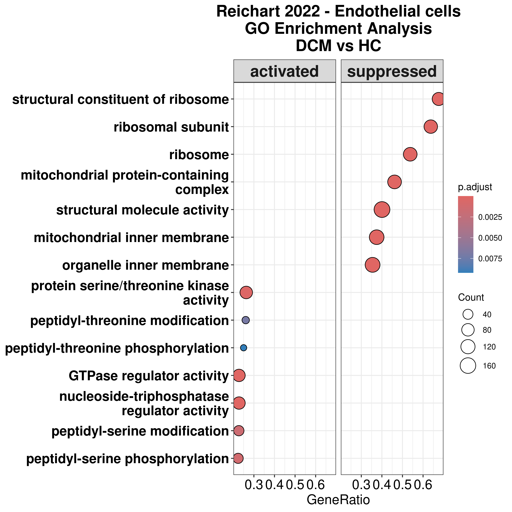
classify_terms <- function(df) {
df$sign <- ifelse(df$NES > 0, "activated", "suppressed")
return(df)
}
GSEA_simplified@result <- classify_terms(GSEA_simplified@result)
# Split the GSEA results
activated_terms <- subset(GSEA_simplified@result, sign == "activated")
suppressed_terms <- subset(GSEA_simplified@result, sign == "suppressed")
# Create two separate enrichResult objects
gsea_activated <- GSEA_simplified
gsea_activated@result <- activated_terms
gsea_suppressed <- GSEA_simplified
gsea_suppressed@result <- suppressed_terms
# Plot activated terms
p1 <- emapplot(pairwise_termsim(gsea_activated), showCategory = 50, cex_label_category = 0.7, min_edge = 0.15) +
ggtitle("Activated Terms") +
theme(plot.title = element_text(face = "bold", size = 18, hjust = 0.5))
# Plot suppressed terms
p2 <- emapplot(pairwise_termsim(gsea_suppressed), showCategory = 50, cex_label_category = 0.7, min_edge = 0.15) +
ggtitle("Suppressed Terms") +
theme(plot.title = element_text(face = "bold", size = 18, hjust = 0.5))
# Combine the plots
combined_plot <- p1 | p2
print(combined_plot)
gseaGO_up_terms <- dplyr::filter(GSEA_Reichart@result, NES > 0)
table(gseaGO_up_terms$ONTOLOGY)
BP MF
6 9 gseaGO_up_terms <- gseaGO_up_terms$ID
mat1 = GO_similarity(gseaGO_up_terms, ont = "BP")
BP <- simplifyGO(mat1, column_title = "6 GO Biological Process terms")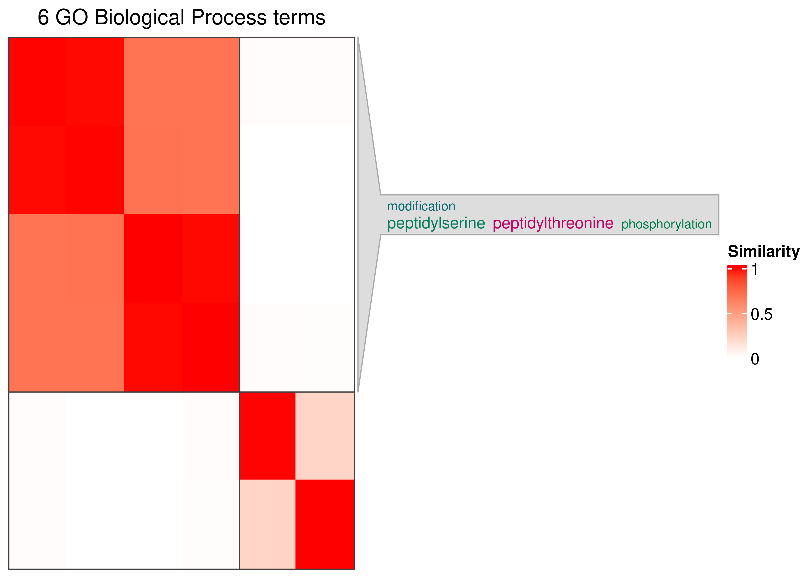
mat2 = GO_similarity(gseaGO_up_terms, ont = "MF")
MF <- simplifyGO(mat2, column_title = "9 GO Molecular Function terms")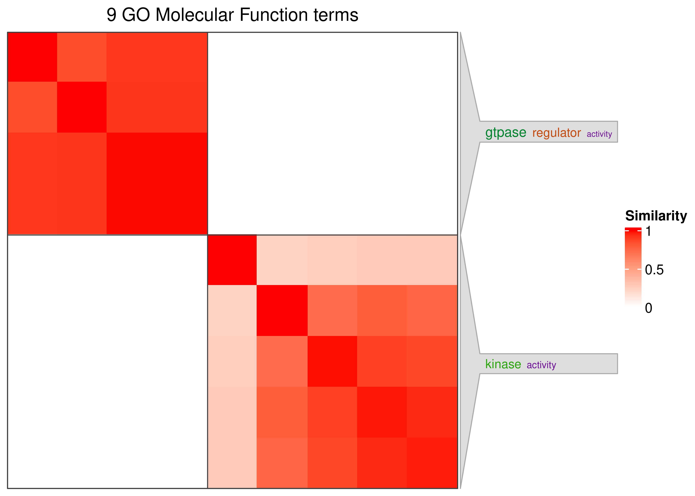
gseaGO_down_terms <- dplyr::filter(GSEA_Reichart@result, NES < 0)
table(gseaGO_down_terms$ONTOLOGY)
BP CC MF
65 49 19 gseaGO_down_terms <- gseaGO_down_terms$ID
mat1 = GO_similarity(gseaGO_down_terms, ont = "BP")
BP <- simplifyGO(mat1, column_title = "65 GO Biological Process terms")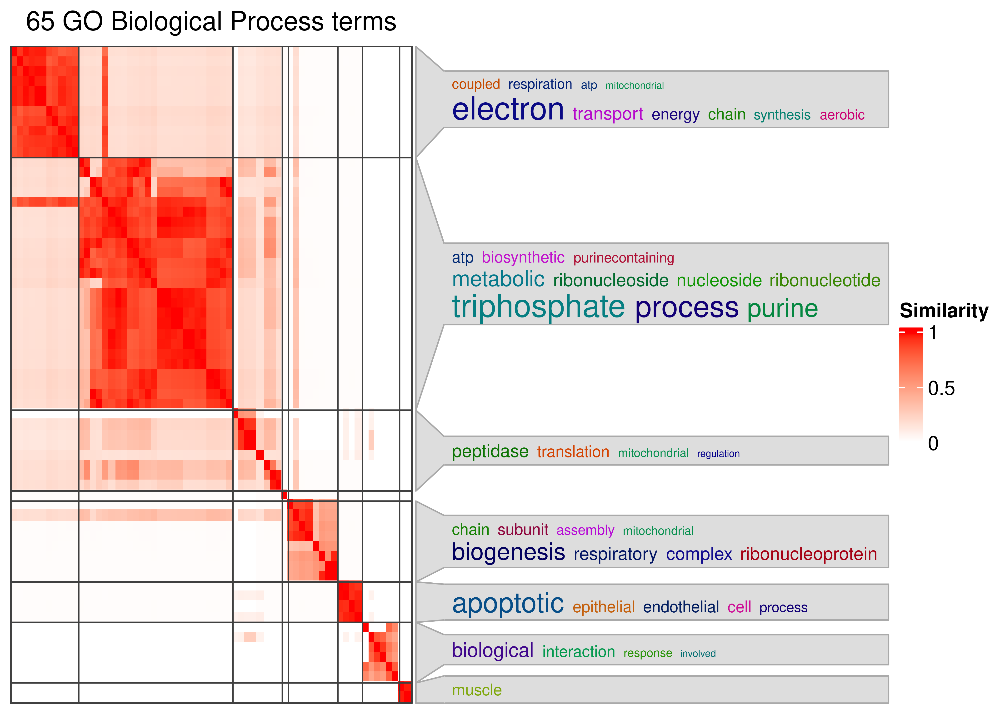
mat2 = GO_similarity(gseaGO_down_terms, ont = "MF")
MF <- simplifyGO(mat2, column_title = "49 GO Molecular Function terms")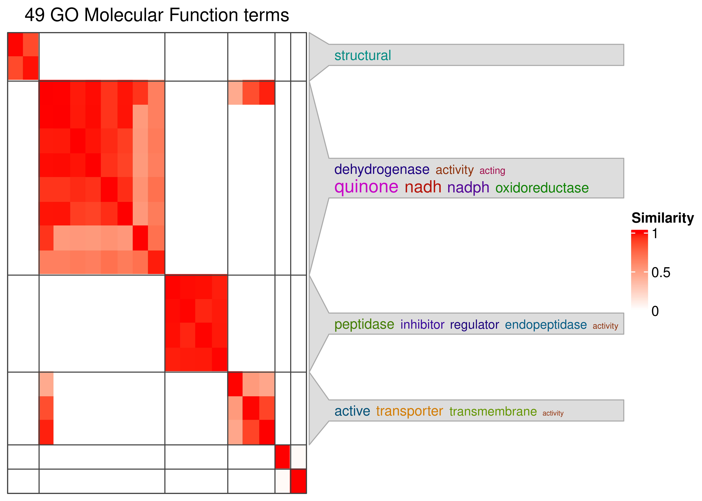
mat3 = GO_similarity(gseaGO_down_terms, ont = "CC")
CC <- simplifyGO(mat3, column_title = "19 GO Cellular Component terms")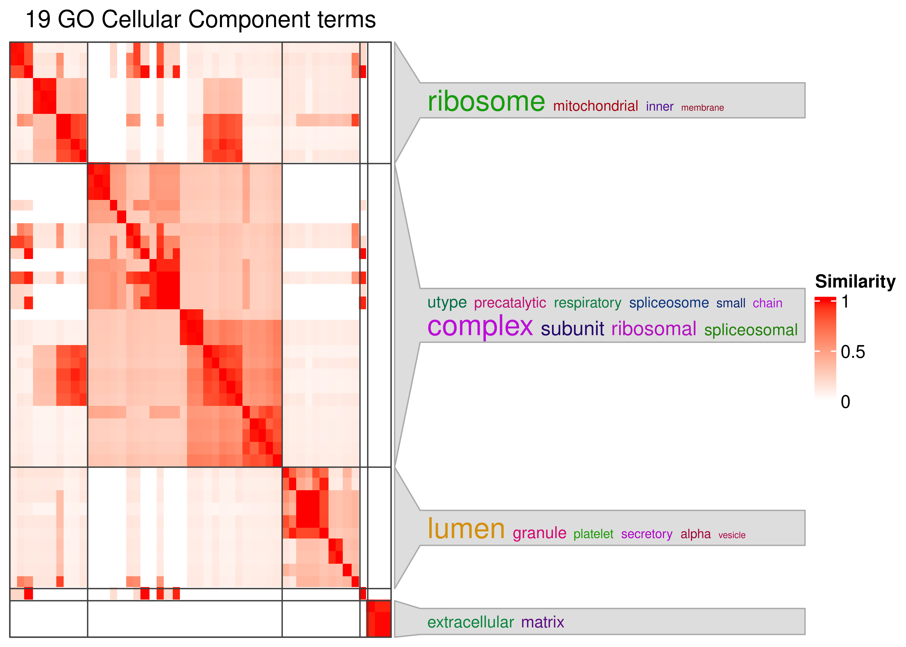
GSEA_KEGG_Reichart <- gseKEGG(geneList = genelist,
organism = "hsa",
keyType = "kegg",
nPermSimple = 10000,
minGSSize = 10,
eps = 0)
GSEA_KEGG_Reichart <- reorder_GO_by_pvalue(GSEA_KEGG_Reichart)GSEA_KEGG_Reichart@result <- GSEA_KEGG_Reichart@result %>%
filter(str_count(core_enrichment, "/") >= 4)
GSEA_KEGG_Reichart <- reorder_GO_by_pvalue(GSEA_KEGG_Reichart)
dotplot(GSEA_KEGG_Reichart, showCategory = 7, split=".sign", title = paste0("Reichart 2022 - Endothelial cells", "\nKEGG Pathways Enrichment Analysis", "\nDCM vs HC"),
label_format = 35, font.size = 15) +
theme(plot.title = element_text( face = "bold", size = 18, hjust = 0.5),
axis.text.y = element_text(face = "bold"),
strip.text = element_text(face = "bold", size = 18)) +
facet_grid(.~.sign)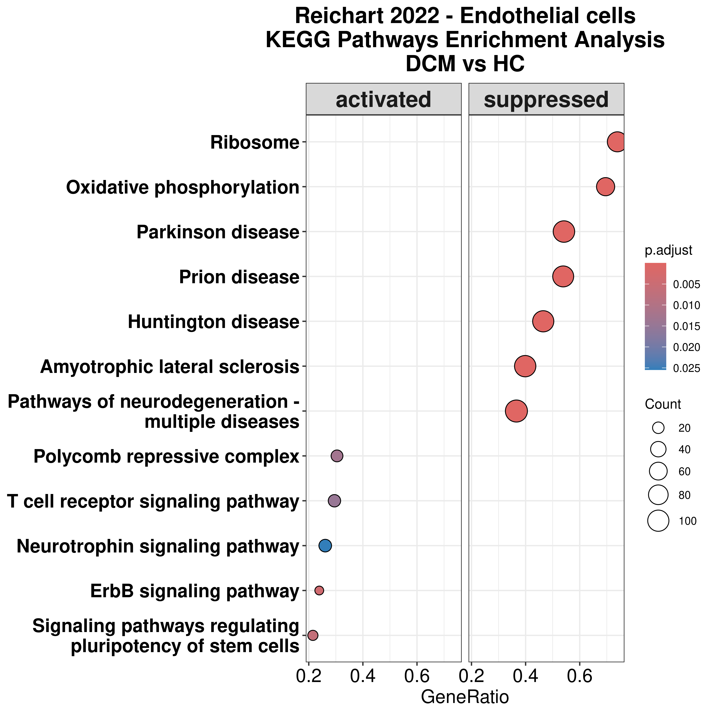
GSEA_simplified <- GSEA_KEGG_Reichart
GSEA_simplified@result <- classify_terms(GSEA_simplified@result)
# Split the GSEA results
activated_terms <- subset(GSEA_simplified@result, sign == "activated")
suppressed_terms <- subset(GSEA_simplified@result, sign == "suppressed")
# Create two separate enrichResult objects
gsea_activated <- GSEA_simplified
gsea_activated@result <- activated_terms
gsea_suppressed <- GSEA_simplified
gsea_suppressed@result <- suppressed_terms
# Plot activated terms
p1 <- emapplot(pairwise_termsim(gsea_activated), showCategory = 50, cex_label_category = 0.7, min_edge = 0.15) +
ggtitle("Activated Terms") +
theme(plot.title = element_text(face = "bold", size = 18, hjust = 0.5))
# Plot suppressed terms
p2 <- emapplot(pairwise_termsim(gsea_suppressed), showCategory = 50, cex_label_category = 0.7, min_edge = 0.15) +
ggtitle("Suppressed Terms") +
theme(plot.title = element_text(face = "bold", size = 18, hjust = 0.5))
# Combine the plots
combined_plot <- p1 | p2
print(combined_plot)
metadata_heatmap <- metadata_Reichart %>%
dplyr::select(donor_id, sex, disease, LVEF_percent)
sig_counts <- counts_Reichart[rownames(counts_Reichart) %in% signif_Reichart$gene, ]
heat_colors <- rev(brewer.pal(11, "PuOr"))
## Run pheatmap using the metadata data frame for the annotation
pheatmap::pheatmap(sig_counts,
color = heat_colors,
cluster_rows = TRUE,
scale = "row",
show_rownames = FALSE,
annotation_col = metadata_heatmap,
border_color = NA,
fontsize = 10,
cluster_cols=TRUE,
fontsize_row = 10,
height = 20) 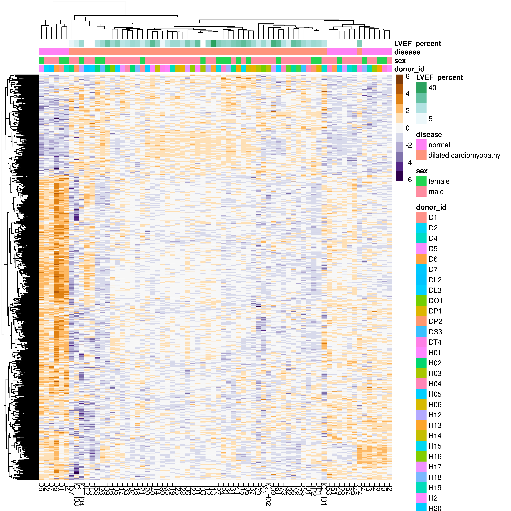
DEGs_top_up <- signif_Reichart %>%
dplyr::arrange(desc(metric))
DEGs_top_down <- signif_Reichart %>%
dplyr::arrange(metric)
DEGs_top <- dplyr::bind_rows(head(DEGs_top_up, 20), head(DEGs_top_down, 20))
sig_counts <- counts_Reichart[rownames(counts_Reichart) %in% DEGs_top$gene, ]
sig_counts <- sig_counts[match(DEGs_top$gene, rownames(sig_counts)), ]
heat_colors <- rev(brewer.pal(11, "PuOr"))
## Run pheatmap using the metadata data frame for the annotation
pheatmap::pheatmap(sig_counts,
color = heat_colors,
cluster_rows = FALSE,
scale = "row",
show_rownames = TRUE,
annotation_col = metadata_heatmap,
border_color = NA,
fontsize = 10,
cluster_cols=TRUE,
fontsize_row = 10,
height = 20) 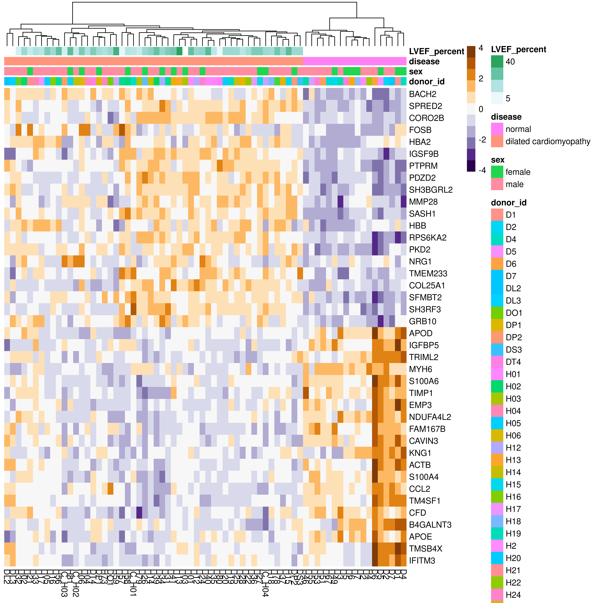
rm(activated_terms, BP, CC, combined_plot, combined_plots, DEGs_top, DEGs_top_down, DEGs_top_up, entrezid, gsea_activated, GSEA_simplified, gsea_suppressed, mat1, mat2, mat3, metadata_heatmap, MF, p1, p2, percent_stats, plots, sig_counts, suppressed_terms, genelist, gseaGO_down_terms, gseaGO_up_terms, i, labels)Volcano plots
volcano <- list()
keyvals <- rep("grey", nrow(results_Koenig))
names(keyvals) <- rep("Not significant", nrow(results_Koenig))
keyvals[results_Koenig$gene %in% dplyr::filter(signif_Koenig, logFC>0)$gene] <- "#A63A2A"
names(keyvals)[keyvals == "#A63A2A"] <- "Upregulated"
keyvals[results_Koenig$gene%in% dplyr::filter(signif_Koenig, logFC<0)$gene] <- "#004C8C"
names(keyvals)[keyvals == "#004C8C"] <- "Downregulated"
volcano[[1]] <- EnhancedVolcano(results_Koenig,
lab = results_Koenig$gene,
x = "logFC",
y = "FDR",
labSize = 0,
legendLabSize = 15,
titleLabSize = 16,
axisLabSize = 12,
captionLabSize = 0,
pointSize = 0.3,
FCcutoff = 0.5,
pCutoff = 0.05,
ylim = c(0, 11),
xlim = c(-8, 8),
colAlpha = 1,
drawConnectors = FALSE,
subtitle = NULL,
title = "Koenig 2022\nEndothelial cells\nDCM (n=13) vs HC (n=25)",
colCustom = keyvals
) + theme(legend.position = "none")
keyvals <- rep("grey", nrow(results_Chaffin))
names(keyvals) <- rep("Not significant", nrow(results_Chaffin))
keyvals[results_Chaffin$gene %in% dplyr::filter(signif_Chaffin, logFC>0)$gene] <- "#A63A2A"
names(keyvals)[keyvals == "#A63A2A"] <- "Upregulated"
keyvals[results_Chaffin$gene%in% dplyr::filter(signif_Chaffin, logFC<0)$gene] <- "#004C8C"
names(keyvals)[keyvals == "#004C8C"] <- "Downregulated"
volcano[[2]] <- EnhancedVolcano(results_Chaffin,
lab = results_Chaffin$gene,
x = "logFC",
y = "FDR",
labSize = 0,
legendLabSize = 15,
titleLabSize = 16,
axisLabSize = 12,
captionLabSize = 0,
pointSize = 0.3,
FCcutoff = 0.5,
pCutoff = 0.05,
ylim = c(0, 11),
xlim = c(-8, 8),
colAlpha = 1,
drawConnectors = FALSE,
subtitle = NULL,
title = "Chaffin 2022\nEndothelial cells\nDCM (n=11) vs HC (n=16)",
colCustom = keyvals
) + theme(legend.position = "none")
keyvals <- rep("grey", nrow(results_Reichart))
names(keyvals) <- rep("Not significant", nrow(results_Reichart))
keyvals[results_Reichart$gene %in% dplyr::filter(signif_Reichart, logFC>0)$gene] <- "#A63A2A"
names(keyvals)[keyvals == "#A63A2A"] <- "Upregulated"
keyvals[results_Reichart$gene%in% dplyr::filter(signif_Reichart, logFC<0)$gene] <- "#004C8C"
names(keyvals)[keyvals == "#004C8C"] <- "Downregulated"
volcano[[3]] <- EnhancedVolcano(results_Reichart,
lab = results_Reichart$gene,
x = "logFC",
y = "FDR",
labSize = 0,
legendLabSize = 0,
titleLabSize = 16,
axisLabSize = 12,
captionLabSize = 0,
pointSize = 0.3,
FCcutoff = 0.5,
pCutoff = 0.05,
ylim = c(0, 11),
xlim = c(-8, 8),
colAlpha = 1,
drawConnectors = FALSE,
subtitle = NULL,
title = "Reichart 2022\nEndothelial cells\nDCM (n=52) vs HC (n=18)",
colCustom = keyvals
) + theme(legend.position = "none")
combined_plots <- volcano[[1]] + volcano[[2]] + volcano[[3]] + plot_layout(nrow = 1)
combined_plots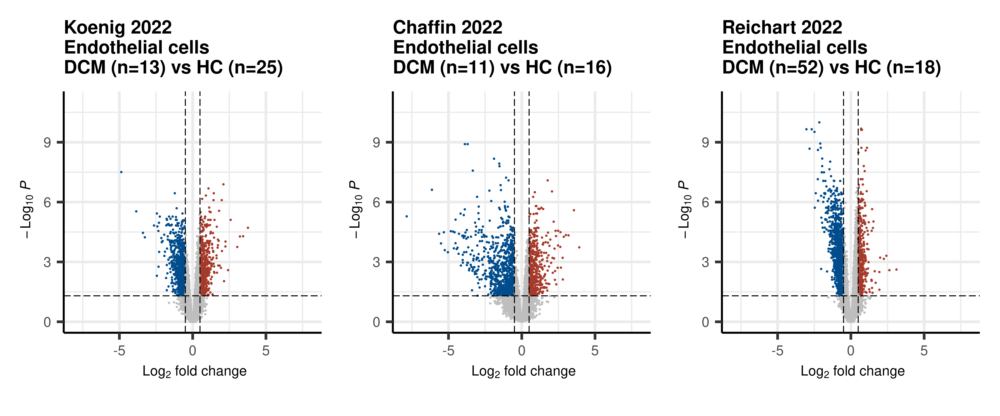
Correlation plot
library(GGally)
# Merge the datasets by a common column, e.g., gene
merged_data <- results_Koenig %>%
dplyr::select(gene, logFC_Koenig = logFC) %>%
inner_join(results_Chaffin %>% dplyr::select(gene, logFC_Chaffin = logFC), by = "gene") %>%
inner_join(results_Reichart %>% dplyr::select(gene, logFC_Reichart = logFC), by = "gene")
# Create a pairwise scatterplot with correlations
ggpairs(
merged_data %>% dplyr::select(-gene), # Exclude the gene column for plotting
lower = list(continuous = wrap("smooth", method = "lm")), # Add linear fit
diag = list(continuous = "densityDiag"), # Density plot on diagonal
upper = list(continuous = wrap("cor", size = 4)) # Correlation and p-value in upper triangle
) +
theme_minimal()
Overlap
gene_sets_up <- list(
Chaffin = dplyr::filter(signif_Chaffin, logFC > 0)$gene,
Koenig = dplyr::filter(signif_Koenig, logFC > 0)$gene,
Reichart = dplyr::filter(signif_Reichart, logFC > 0)$gene
)
gene_sets_up <- lapply(gene_sets_up, function(x) x[!is.na(x)])
m <- make_comb_mat(gene_sets_up, mode = "intersect", min_set_size = 1)
p1 <- UpSet(m, column_title = "Upregulated genes - intersect", comb_order = order(comb_size(m)),
top_annotation = upset_top_annotation(m, add_numbers = TRUE),
right_annotation = upset_right_annotation(m, add_numbers = TRUE))
gene_sets_down <- list(
Chaffin = dplyr::filter(signif_Chaffin, logFC < 0)$gene,
Koenig = dplyr::filter(signif_Koenig, logFC < 0)$gene,
Reichart = dplyr::filter(signif_Reichart, logFC < 0)$gene
)
gene_sets_down <- lapply(gene_sets_down, function(x) x[!is.na(x)])
m <- make_comb_mat(gene_sets_down, mode = "intersect")
p2 <- UpSet(m, column_title = "Downregulated genes - intersect", comb_order = order(comb_size(m)),
top_annotation = upset_top_annotation(m, add_numbers = TRUE),
right_annotation = upset_right_annotation(m, add_numbers = TRUE))
p1 <- grid::grid.grabExpr(draw(p1))
p2 <- grid::grid.grabExpr(draw(p2))
combined_plots <- plot_grid(p1, p2, ncol = 1)
print(combined_plots)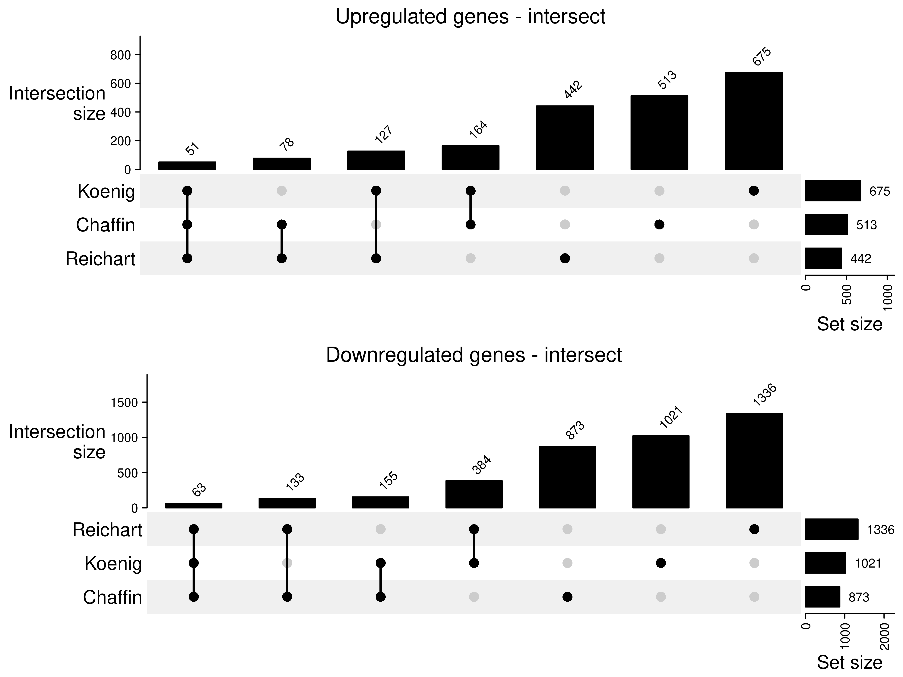
rm(m, p1, p2, combined_plots)gene_sets_up <- list(
Chaffin = dplyr::filter(signif_Chaffin, logFC > 0)$gene,
Koenig = dplyr::filter(signif_Koenig, logFC > 0)$gene,
Reichart = dplyr::filter(signif_Reichart, logFC > 0)$gene
)
gene_sets_up <- lapply(gene_sets_up, function(x) x[!is.na(x)])
m <- make_comb_mat(gene_sets_up, mode = "distinct", min_set_size = 1)
p1 <- UpSet(m, column_title = "Upregulated genes - distinct", comb_order = order(comb_size(m)),
top_annotation = upset_top_annotation(m, add_numbers = TRUE),
right_annotation = upset_right_annotation(m, add_numbers = TRUE))
gene_sets_down <- list(
Chaffin = dplyr::filter(signif_Chaffin, logFC < 0)$gene,
Koenig = dplyr::filter(signif_Koenig, logFC < 0)$gene,
Reichart = dplyr::filter(signif_Reichart, logFC < 0)$gene
)
gene_sets_down <- lapply(gene_sets_down, function(x) x[!is.na(x)])
m <- make_comb_mat(gene_sets_down, mode = "distinct")
p2 <- UpSet(m, column_title = "Downregulated genes - distinct", comb_order = order(comb_size(m)),
top_annotation = upset_top_annotation(m, add_numbers = TRUE),
right_annotation = upset_right_annotation(m, add_numbers = TRUE))
p1 <- grid::grid.grabExpr(draw(p1))
p2 <- grid::grid.grabExpr(draw(p2))
combined_plots <- plot_grid(p1, p2, ncol = 1)
print(combined_plots)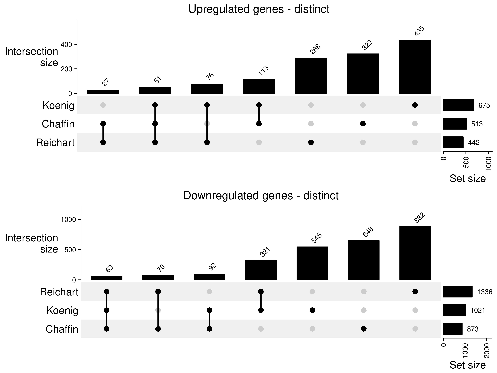
rm(m, p1, p2, combined_plots)common_up <- Reduce(intersect, list(filter(signif_Chaffin, logFC > 0.25)$gene,
filter(signif_Koenig, logFC > 0.25)$gene,
filter(signif_Reichart, logFC > 0.25)$gene))
common_down <- Reduce(intersect, list(filter(signif_Chaffin, logFC < -0.25)$gene,
filter(signif_Koenig, logFC < -0.25)$gene,
filter(signif_Reichart, logFC < -0.25)$gene))
common_genes <- union(common_up, common_down)
common_FC <- data.frame(
gene = sort(common_genes),
logFC_Chaffin = signif_Chaffin %>%
filter(gene %in% common_genes) %>%
arrange(gene) %>%
pull(logFC),
logFC_Koenig = signif_Koenig %>%
filter(gene %in% common_genes) %>%
arrange(gene) %>%
pull(logFC),
logFC_Reichart = signif_Reichart %>%
filter(gene %in% common_genes) %>%
arrange(gene) %>%
pull(logFC)
) %>%
arrange(logFC_Koenig)
common_universe <- Reduce(intersect, list(results_Koenig$gene,
results_Chaffin$gene,
results_Reichart$gene))common_universe_entrez <- bitr(common_universe, fromType="SYMBOL", toType="ENTREZID", OrgDb="org.Hs.eg.db", drop = TRUE)$ENTREZID
common_up_entrez <- bitr(common_up, fromType="SYMBOL", toType="ENTREZID", OrgDb="org.Hs.eg.db", drop = TRUE)$ENTREZID
common_down_entrez <- bitr(common_down, fromType="SYMBOL", toType="ENTREZID", OrgDb="org.Hs.eg.db", drop = TRUE)$ENTREZIDORA_up <- enrichGO(common_up_entrez, OrgDb = "org.Hs.eg.db", universe = common_universe_entrez, ont = "ALL", readable = TRUE, pvalueCutoff = 0.2)
nrow(ORA_up)[1] 31ORA_up <- gsfilter(ORA_up, by = 'Count', min = 3)
ORA_up <- reorder_GO_by_pvalue(ORA_up)
ORA_up_simplified <- clusterProfiler::simplify(
ORA_up,
cutoff = 0.7,
by = "p.adjust",
select_fun = min,
measure = "Wang",
semData = NULL
)
ORA_up_simplified <- reorder_GO_by_pvalue(ORA_up_simplified)
ORA_down <- enrichGO(common_down_entrez, OrgDb = "org.Hs.eg.db", universe = common_universe_entrez, ont = "ALL", readable = TRUE, pvalueCutoff = 0.2)
nrow(ORA_down)[1] 103ORA_down <- gsfilter(ORA_down, by = 'Count', min = 3)
ORA_down <- reorder_GO_by_pvalue(ORA_down)
ORA_down_simplified <- clusterProfiler::simplify(
ORA_down,
cutoff = 0.7,
by = "p.adjust",
select_fun = min,
measure = "Wang",
semData = NULL
)
ORA_down_simplified <- reorder_GO_by_pvalue(ORA_down_simplified)p1 <- dotplot(ORA_up_simplified, showCategory = 10, title = paste0("GO - Over-representation analysis", "\nUpregulated terms"), label_format = 32, font.size = 15) +
theme(plot.title = element_text( face = "bold", size = 18, hjust = 0.5),
axis.text.y = element_text(face = "bold"))
p2 <- dotplot(ORA_down_simplified, showCategory = 10, title = paste0("GO - Over-representation analysis", "\nDownegulated terms"), label_format = 32, font.size = 15) +
theme(plot.title = element_text( face = "bold", size = 18, hjust = 0.5),
axis.text.y = element_text(face = "bold"))
print(p1|p2)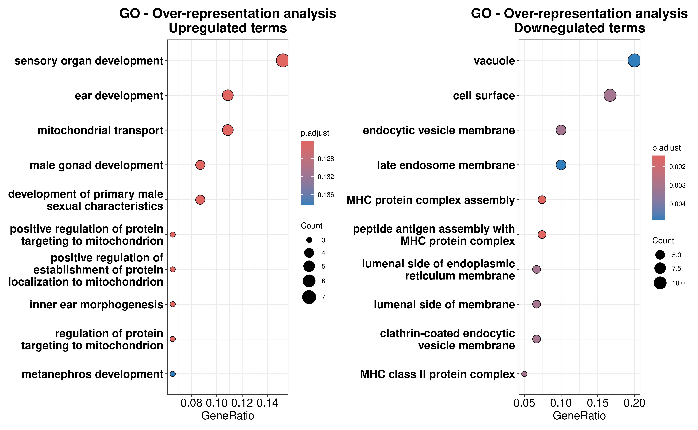
ORA_up_simplified <- pairwise_termsim(ORA_up_simplified)
ORA_down_simplified <- pairwise_termsim(ORA_down_simplified)
p1 <- emapplot(ORA_up_simplified, showCategory = 30, cex_label_category = 0.7, min_edge = 0.15) +
ggtitle("Upregulated Terms") +
theme(plot.title = element_text(face = "bold", size = 18, hjust = 0.5))
p2 <- emapplot(ORA_down_simplified, showCategory = 30, cex_label_category = 0.7, min_edge = 0.15) +
ggtitle("Downregulated Terms") +
theme(plot.title = element_text(face = "bold", size = 18, hjust = 0.5))
print(p1|p2)
combined_FC <- full_join(signif_Chaffin %>% dplyr::select(gene, logFC_Chaffin = logFC),
signif_Koenig %>% dplyr::select(gene, logFC_Koenig = logFC),
by = "gene") %>%
full_join(signif_Reichart %>% dplyr::select(gene, logFC_Reichart = logFC), by = "gene")
common_genes_2 <- combined_FC %>%
mutate(
up_count = rowSums(dplyr::select(., starts_with("logFC")) > 0.25, na.rm = TRUE),
down_count = rowSums(dplyr::select(., starts_with("logFC")) < -0.25, na.rm = TRUE)
) %>%
dplyr::filter(up_count >= 2 | down_count >= 2) %>%
dplyr::select(gene)
common_FC_2 <- combined_FC %>%
dplyr::filter(gene %in% common_genes_2$gene) %>%
arrange(gene) %>%
mutate(
Up_Down = case_when(
logFC_Chaffin < -0.25 | logFC_Koenig < -0.25 | logFC_Reichart < -0.25 ~ "Down",
logFC_Chaffin > 0.25 | logFC_Koenig > 0.25 | logFC_Reichart > 0.25 ~ "Up",
)
)
common_FC_2 <- common_FC_2 %>%
left_join(results_Chaffin %>% dplyr::select(gene, logFC_Chaffin = logFC, percentCells_Chaffin = percentCells), by = "gene") %>%
left_join(results_Koenig %>% dplyr::select(gene, logFC_Koenig = logFC, percentCells_Koenig = percentCells), by = "gene") %>%
left_join(results_Reichart %>% dplyr::select(gene, logFC_Reichart = logFC, percentCells_Reichart = percentCells), by = "gene") %>%
mutate(
avg_percentCells = rowMeans(dplyr::select(., starts_with("percentCells_")), na.rm = TRUE)
) %>%
dplyr::select(
gene,
logFC_Chaffin.y, logFC_Koenig.y, logFC_Reichart.y,
percentCells_Chaffin, percentCells_Koenig, percentCells_Reichart,
avg_percentCells,
Up_Down
) %>%
rename(
logFC_Chaffin = logFC_Chaffin.y,
logFC_Koenig = logFC_Koenig.y,
logFC_Reichart = logFC_Reichart.y
)
combined_genes <- list(results_Koenig$gene, results_Chaffin$gene, results_Reichart$gene)
# Find the genes that appear in at least 2 datasets
common_universe <- combined_genes %>%
unlist() %>% # Flatten the list to create a single vector of genes
table() %>%
as.data.frame() %>%
dplyr::filter(Freq > 1) %>%
rename(gene = ".") %>%
pull(gene)common_universe_entrez <- bitr(common_universe, fromType="SYMBOL", toType="ENTREZID", OrgDb="org.Hs.eg.db", drop = TRUE)$ENTREZID
common_up_entrez <- bitr(dplyr::filter(common_FC_2, Up_Down == "Up")$gene, fromType="SYMBOL", toType="ENTREZID", OrgDb="org.Hs.eg.db", drop = TRUE)$ENTREZID
common_down_entrez <- bitr(dplyr::filter(common_FC_2, Up_Down == "Down")$gene, fromType="SYMBOL", toType="ENTREZID", OrgDb="org.Hs.eg.db", drop = TRUE)$ENTREZIDORA_up_2 <- enrichGO(common_up_entrez, OrgDb = "org.Hs.eg.db", universe = common_universe_entrez, ont = "ALL", readable = TRUE, pvalueCutoff = 0.05)
nrow(ORA_up_2)
ORA_up_2 <- gsfilter(ORA_up_2, by = 'Count', min = 5)
ORA_up_2 <- reorder_GO_by_pvalue(ORA_up_2)
ORA_up_2_simplified <- clusterProfiler::simplify(
ORA_up_2,
cutoff = 0.7,
by = "p.adjust",
select_fun = min,
measure = "Wang",
semData = NULL
)
ORA_up_2_simplified <- reorder_GO_by_pvalue(ORA_up_2_simplified)
ORA_down_2 <- enrichGO(common_down_entrez, OrgDb = "org.Hs.eg.db", universe = common_universe_entrez, ont = "ALL", readable = TRUE, pvalueCutoff = 0.05)
nrow(ORA_down_2)
ORA_down_2 <- gsfilter(ORA_down_2, by = 'Count', min = 5)
ORA_down_2 <- reorder_GO_by_pvalue(ORA_down_2)
ORA_down_2_simplified <- clusterProfiler::simplify(
ORA_down_2,
cutoff = 0.7,
by = "p.adjust",
select_fun = min,
measure = "Wang",
semData = NULL
)
ORA_down_2_simplified <- reorder_GO_by_pvalue(ORA_down_2_simplified)p1 <- dotplot(ORA_up_2_simplified, showCategory = 10, title = paste0("GO - Over-representation analysis", "\nUpregulated terms"), label_format = 32, font.size = 15) +
theme(plot.title = element_text( face = "bold", size = 18, hjust = 0.5),
axis.text.y = element_text(face = "bold"))
p2 <- dotplot(ORA_down_2_simplified, showCategory = 10, title = paste0("GO - Over-representation analysis", "\nDownegulated terms"), label_format = 32, font.size = 15) +
theme(plot.title = element_text( face = "bold", size = 18, hjust = 0.5),
axis.text.y = element_text(face = "bold"))
print(p1|p2)ORA_up_2_simplified <- pairwise_termsim(ORA_up_2_simplified)
ORA_down_2_simplified <- pairwise_termsim(ORA_down_2_simplified)
p1 <- emapplot(ORA_up_2_simplified, showCategory = 50, cex_label_category = 0.7, min_edge = 0.15) +
ggtitle("Upregulated Terms") +
theme(plot.title = element_text(face = "bold", size = 18, hjust = 0.5))
p2 <- emapplot(ORA_down_2_simplified, showCategory = 50, cex_label_category = 0.7, min_edge = 0.15) +
ggtitle("Downregulated Terms") +
theme(plot.title = element_text(face = "bold", size = 18, hjust = 0.5))
print(p1|p2)ORA_KEGG_up_2 <- enrichKEGG(common_up_entrez, organism = "hsa", universe = common_universe_entrez, pvalueCutoff = 0.05, pAdjustMethod = "BH")
nrow(ORA_KEGG_up_2)
ORA_KEGG_up_2 <- gsfilter(ORA_KEGG_up_2, by = 'Count', min = 5)
ORA_KEGG_up_2 <- reorder_GO_by_pvalue(ORA_KEGG_up_2)
ORA_KEGG_down_2 <- enrichKEGG(common_down_entrez, organism = "hsa", universe = common_universe_entrez, pvalueCutoff = 0.05, pAdjustMethod = "BH")
nrow(ORA_KEGG_down_2)
ORA_KEGG_down_2 <- gsfilter(ORA_KEGG_down_2, by = 'Count', min = 5)
ORA_KEGG_down_2 <- reorder_GO_by_pvalue(ORA_KEGG_down_2)p1 <- dotplot(ORA_KEGG_up_2, showCategory = 10, title = paste0("GO - Over-representation analysis", "\nUpregulated terms"), label_format = 32, font.size = 15) +
theme(plot.title = element_text( face = "bold", size = 18, hjust = 0.5),
axis.text.y = element_text(face = "bold"))
p2 <- dotplot(ORA_KEGG_down_2, showCategory = 10, title = paste0("GO - Over-representation analysis", "\nDownegulated terms"), label_format = 32, font.size = 15) +
theme(plot.title = element_text( face = "bold", size = 18, hjust = 0.5),
axis.text.y = element_text(face = "bold"))
print(p1|p2)ORA_KEGG_up_2 <- pairwise_termsim(ORA_KEGG_up_2)
ORA_KEGG_down_2 <- pairwise_termsim(ORA_KEGG_down_2)
p1 <- emapplot(ORA_KEGG_up_2, showCategory = 50, cex_label_category = 0.7, min_edge = 0.15) +
ggtitle("Upregulated Terms") +
theme(plot.title = element_text(face = "bold", size = 18, hjust = 0.5))
p2 <- emapplot(ORA_KEGG_down_2, showCategory = 50, cex_label_category = 0.7, min_edge = 0.15) +
ggtitle("Downregulated Terms") +
theme(plot.title = element_text(face = "bold", size = 18, hjust = 0.5))
print(p1|p2)#SGLT2
DCM_RV <- readRDS(here::here("output", "QC_integration_annotation_26", "DCM_RV_integrated.rds"))DefaultAssay(DCM_RV) <- "RNA"
DCM_RV <- NormalizeData(DCM_RV)DCM_RV_EC <- subset(DCM_RV, cell_type == "Endothelial cells")DefaultAssay(nuclei) <- "RNA"
nuclei <- NormalizeData(nuclei)
DefaultAssay(Chaffin) <- "RNA"
Chaffin <- NormalizeData(Chaffin)
DefaultAssay(Reichart) <- "RNA"DefaultAssay(Koenig_EC) <- "RNA"
Koenig_EC <- NormalizeData(Koenig_EC)
DefaultAssay(Chaffin_EC) <- "RNA"
Chaffin_EC <- NormalizeData(Chaffin_EC)
DefaultAssay(Reichart_EC) <- "RNA"(FeaturePlot(Koenig_EC, "SLC5A2") + labs(title = "Koenig_2022 - Endothelial cells\nSLC5A2")) + (FeaturePlot(Chaffin_EC, "SLC5A2") + labs(title = "Chaffin_2022 - Endothelial cells\nSLC5A2")) + (FeaturePlot(Reichart_EC, "SLC5A2") + labs(title = "Reichart_2022 - Endothelial cells\nSLC5A2")) + (FeaturePlot(DCM_RV_EC, "SLC5A2") + labs(title = "DCM_RV - Endothelial cells\nSLC5A2")) + plot_layout(ncol = 2)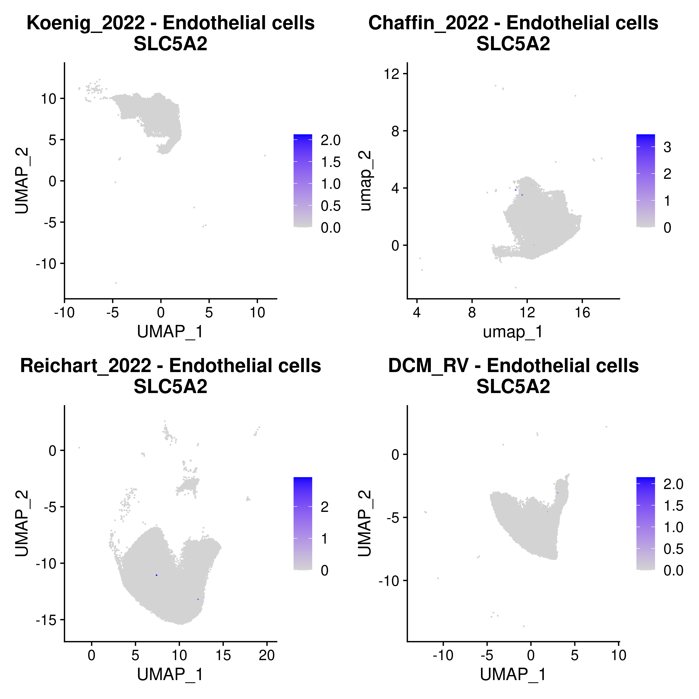
(FeaturePlot(nuclei, "SLC5A2") + labs(title = "Koenig_2022 - All cells\nSLC5A2")) + (FeaturePlot(Chaffin, "SLC5A2") + labs(title = "Chaffin_2022 - All cells\nSLC5A2")) + (FeaturePlot(Reichart, "SLC5A2") + labs(title = "Reichart_2022 - All cells\nSLC5A2")) + (FeaturePlot(DCM_RV, "SLC5A2") + labs(title = "DCM_RV - All cells\nSLC5A2")) + plot_layout(ncol = 2)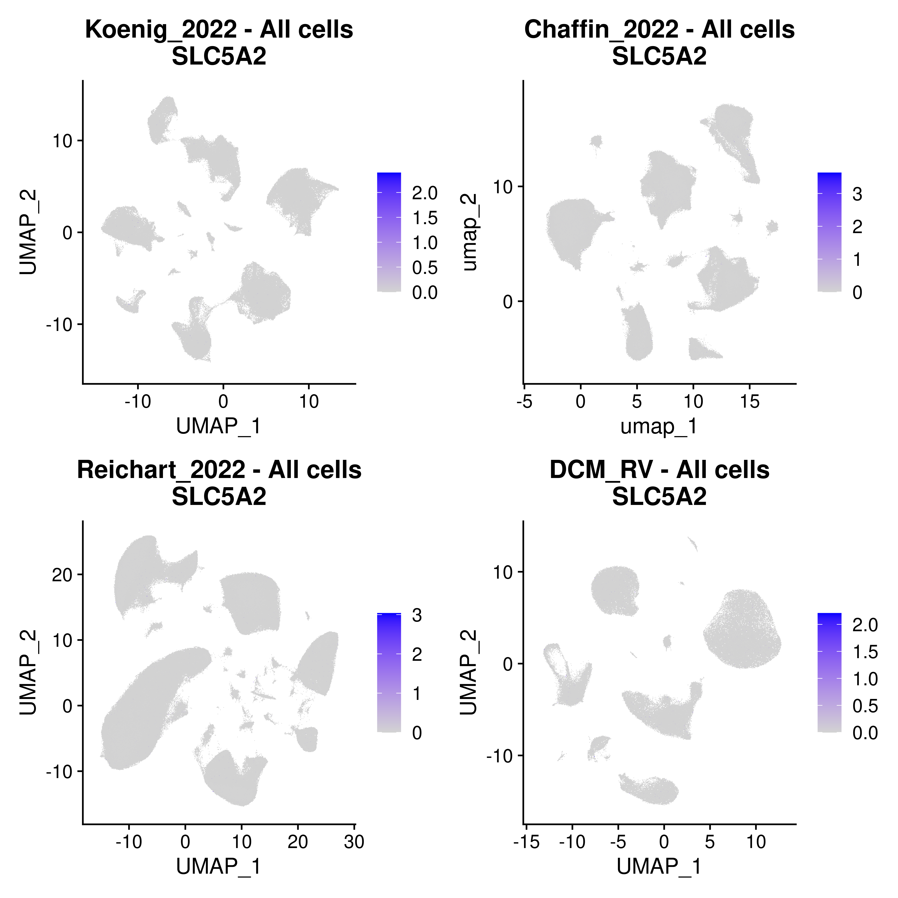
(VlnPlot(Koenig_EC, "SLC5A2", group.by = "Names") + labs(title = "Koenig_2022 - Endothelial cells\nSLC5A2") + NoLegend()) +
(VlnPlot(Chaffin_EC, "SLC5A2", group.by = "cell_type_leiden0.6") + labs(title = "Chaffin_2022 - Endothelial cells\nSLC5A2") + NoLegend()) +
(VlnPlot(Reichart_EC, "SLC5A2", group.by = "cell_type") + labs(title = "Reichart_2022 - Endothelial cells\nSLC5A2") + NoLegend()) +
(VlnPlot(DCM_RV_EC, "SLC5A2", group.by = "cell_type") + labs(title = "DCM_RV_2022 - Endothelial cells\nSLC5A2") + NoLegend()) +
plot_layout(ncol = 2)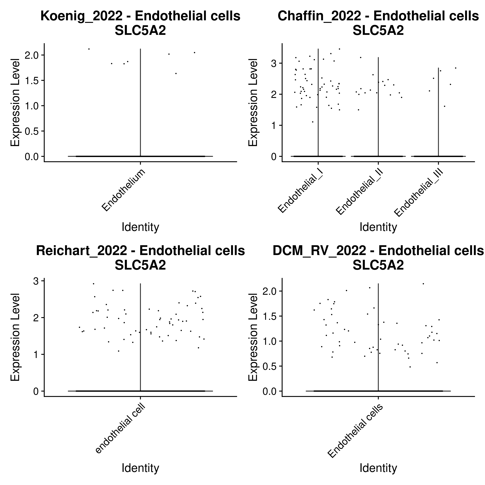
(VlnPlot(Koenig_EC, "SLC5A2", group.by = "Condition") + labs(title = "Koenig_2022 - Endothelial cells\nSLC5A2") + NoLegend()) +
(VlnPlot(Chaffin_EC, "SLC5A2", group.by = "disease") + labs(title = "Chaffin_2022 - Endothelial cells\nSLC5A2") + NoLegend()) +
(VlnPlot(Reichart_EC, "SLC5A2", group.by = "disease") + labs(title = "Reichart_2022 - Endothelial cells\nSLC5A2") + NoLegend()) +
(VlnPlot(DCM_RV_EC, "SLC5A2", group.by = "Group") + labs(title = "DCM_RV - Endothelial cells\nSLC5A2") + NoLegend()) +
plot_layout(ncol = 2)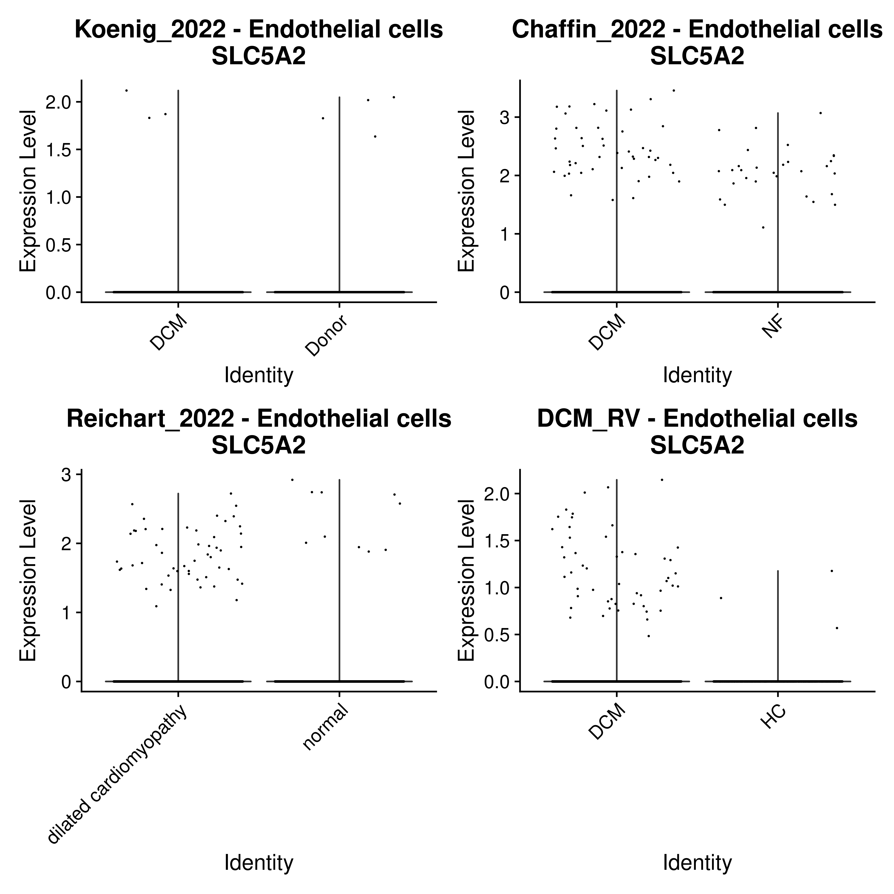
(VlnPlot(Koenig_EC, "SLC5A2", group.by = "Condition", split.by = "orig.ident") + labs(title = "Koenig_2022 - Endothelial cells\nSLC5A2") + NoLegend()) +
(VlnPlot(Chaffin_EC, "SLC5A2", group.by = "disease", split.by = "donor_id") + labs(title = "Chaffin_2022 - Endothelial cells\nSLC5A2") + NoLegend()) +
(VlnPlot(Reichart_EC, "SLC5A2", group.by = "disease", split.by = "donor_id") + labs(title = "Reichart_2022 - Endothelial cells\nSLC5A2") + NoLegend()) +
(VlnPlot(DCM_RV_EC, "SLC5A2", group.by = "Group", split.by = "Sample") + labs(title = "DCM_RV - Endothelial cells\nSLC5A2") + NoLegend()) +
plot_layout(ncol = 1)
(VlnPlot(nuclei, "SLC5A2", group.by = "Names") + labs(title = "Koenig_2022 - All cells\nSLC5A2") + NoLegend()) +
(VlnPlot(Chaffin, "SLC5A2", group.by = "cell_type_leiden0.6") + labs(title = "Chaffin_2022 - All cells\nSLC5A2") + NoLegend()) +
(VlnPlot(Reichart, "SLC5A2", group.by = "cell_type") + labs(title = "Reichart_2022 - All cells\nSLC5A2") + NoLegend()) +
(VlnPlot(DCM_RV, "SLC5A2", group.by = "cell_type") + labs(title = "DCM_RV - All cells\nSLC5A2") + NoLegend()) +
plot_layout(ncol = 2)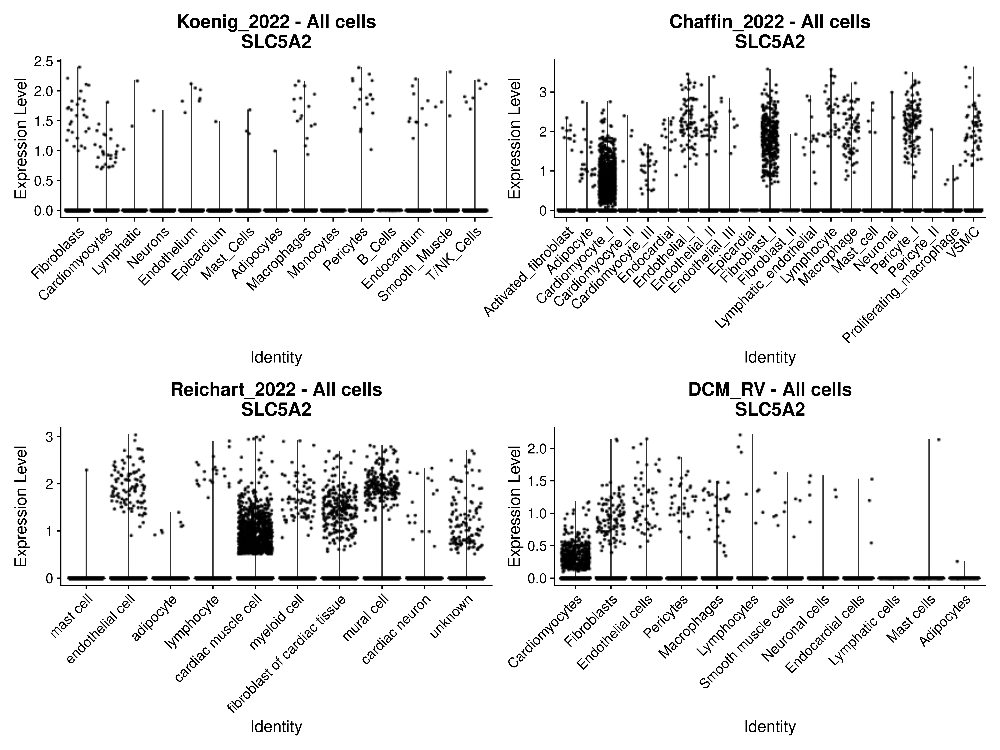
sessionInfo()R version 4.3.1 (2023-06-16)
Platform: x86_64-pc-linux-gnu (64-bit)
Running under: Ubuntu 22.04.4 LTS
Matrix products: default
BLAS: /usr/lib/x86_64-linux-gnu/openblas-pthread/libblas.so.3
LAPACK: /usr/lib/x86_64-linux-gnu/openblas-pthread/libopenblasp-r0.3.20.so; LAPACK version 3.10.0
locale:
[1] LC_CTYPE=en_US.UTF-8 LC_NUMERIC=C
[3] LC_TIME=en_US.UTF-8 LC_COLLATE=en_US.UTF-8
[5] LC_MONETARY=en_US.UTF-8 LC_MESSAGES=en_US.UTF-8
[7] LC_PAPER=en_US.UTF-8 LC_NAME=en_US.UTF-8
[9] LC_ADDRESS=en_US.UTF-8 LC_TELEPHONE=en_US.UTF-8
[11] LC_MEASUREMENT=en_US.UTF-8 LC_IDENTIFICATION=en_US.UTF-8
time zone: Etc/UTC
tzcode source: system (glibc)
attached base packages:
[1] grid stats4 stats graphics grDevices utils datasets
[8] methods base
other attached packages:
[1] GGally_2.2.1 cowplot_1.1.3
[3] ggpubr_0.6.0 igraph_2.0.3
[5] simplifyEnrichment_1.12.0 msigdbr_7.5.1
[7] ComplexHeatmap_2.18.0 UpSetR_1.4.0
[9] reactable_0.4.4 enrichplot_1.22.0
[11] dorothea_1.14.1 OmnipathR_3.10.1
[13] decoupleR_2.9.7 EnhancedVolcano_1.20.0
[15] ggrepel_0.9.5 edgeR_4.0.16
[17] limma_3.58.1 ReactomePA_1.46.0
[19] AnnotationHub_3.10.0 BiocFileCache_2.10.1
[21] dbplyr_2.4.0 org.Hs.eg.db_3.18.0
[23] AnnotationDbi_1.64.1 clusterProfiler_4.10.1
[25] SeuratDisk_0.0.0.9021 gprofiler2_0.2.3
[27] statmod_1.5.0 patchwork_1.2.0
[29] scater_1.30.1 scuttle_1.12.0
[31] Matrix.utils_0.9.7 RColorBrewer_1.1-3
[33] scales_1.3.0 knitr_1.45
[35] gridExtra_2.3 png_0.1-8
[37] pheatmap_1.0.12 reshape2_1.4.4
[39] lubridate_1.9.3 forcats_1.0.0
[41] stringr_1.5.1 purrr_1.0.2
[43] tidyr_1.3.1 tibble_3.2.1
[45] tidyverse_2.0.0 magrittr_2.0.3
[47] ggplot2_3.5.0 dplyr_1.1.4
[49] scCustomize_2.1.2 Matrix_1.6-5
[51] DropletUtils_1.22.0 SingleCellExperiment_1.24.0
[53] SummarizedExperiment_1.32.0 Biobase_2.62.0
[55] GenomicRanges_1.54.1 GenomeInfoDb_1.38.7
[57] IRanges_2.36.0 S4Vectors_0.40.2
[59] BiocGenerics_0.48.1 MatrixGenerics_1.14.0
[61] matrixStats_1.2.0 SeuratObject_5.0.2
[63] Seurat_4.4.0 xlsx_0.6.5
[65] readxl_1.4.3 readr_2.1.5
[67] here_1.0.1
loaded via a namespace (and not attached):
[1] graph_1.80.0 ica_1.0-3
[3] plotly_4.10.4 rematch2_2.1.2
[5] zlibbioc_1.48.0 tidyselect_1.2.1
[7] rvest_1.0.4 bit_4.0.5
[9] doParallel_1.0.17 clue_0.3-65
[11] tm_0.7-14 lattice_0.22-5
[13] rjson_0.2.21 blob_1.2.4
[15] S4Arrays_1.2.1 parallel_4.3.1
[17] cli_3.6.2 ggplotify_0.1.2
[19] goftest_1.2-3 grr_0.9.5
[21] BiocNeighbors_1.20.2 uwot_0.1.16
[23] shadowtext_0.1.3 curl_5.2.1
[25] mime_0.12 evaluate_0.23
[27] tidytree_0.4.6 leiden_0.4.3.1
[29] stringi_1.8.3 backports_1.4.1
[31] httpuv_1.6.14 paletteer_1.6.0
[33] rappdirs_0.3.3 splines_4.3.1
[35] ggraph_2.2.1 logger_0.3.0
[37] bcellViper_1.38.0 sctransform_0.4.1
[39] ggbeeswarm_0.7.2 DBI_1.2.2
[41] HDF5Array_1.30.1 jquerylib_0.1.4
[43] reactome.db_1.86.2 withr_3.0.0
[45] git2r_0.33.0 rprojroot_2.0.4
[47] lmtest_0.9-40 ggnewscale_0.4.10
[49] tidygraph_1.3.1 BiocManager_1.30.22
[51] htmlwidgets_1.6.4 fs_1.6.3
[53] labeling_0.4.3 SparseArray_1.2.4
[55] cellranger_1.1.0 reticulate_1.35.0
[57] zoo_1.8-12 XVector_0.42.0
[59] timechange_0.3.0 foreach_1.5.2
[61] fansi_1.0.6 data.table_1.15.2
[63] ggtree_3.10.1 rhdf5_2.46.1
[65] R.oo_1.26.0 irlba_2.3.5.1
[67] ggrastr_1.0.2 gridGraphics_0.5-1
[69] ellipsis_0.3.2 lazyeval_0.2.2
[71] yaml_2.3.8 survival_3.5-8
[73] scattermore_1.2 BiocVersion_3.18.1
[75] crayon_1.5.2 RcppAnnoy_0.0.22
[77] progressr_0.14.0 tweenr_2.0.3
[79] later_1.3.2 ggridges_0.5.6
[81] codetools_0.2-19 GlobalOptions_0.1.2
[83] KEGGREST_1.42.0 Rtsne_0.17
[85] shape_1.4.6.1 reactR_0.6.0
[87] filelock_1.0.3 pkgconfig_2.0.3
[89] xml2_1.3.6 aplot_0.2.2
[91] spatstat.sparse_3.0-3 ape_5.7-1
[93] viridisLite_0.4.2 xtable_1.8-4
[95] car_3.1-2 highr_0.10
[97] plyr_1.8.9 httr_1.4.7
[99] tools_4.3.1 globals_0.16.3
[101] beeswarm_0.4.0 broom_1.0.5
[103] checkmate_2.3.1 nlme_3.1-164
[105] HDO.db_0.99.1 hdf5r_1.3.10
[107] crosstalk_1.2.1 digest_0.6.35
[109] farver_2.1.1 tzdb_0.4.0
[111] yulab.utils_0.1.4 viridis_0.6.5
[113] glue_1.7.0 cachem_1.0.8
[115] polyclip_1.10-6 generics_0.1.3
[117] proxyC_0.4.1 Biostrings_2.70.2
[119] parallelly_1.37.1 ScaledMatrix_1.10.0
[121] carData_3.0-5 pbapply_1.7-2
[123] spam_2.10-0 gson_0.1.0
[125] dqrng_0.3.2 utf8_1.2.4
[127] graphlayouts_1.1.1 ggsignif_0.6.4
[129] shiny_1.8.0 GenomeInfoDbData_1.2.11
[131] R.utils_2.12.3 rhdf5filters_1.14.1
[133] memoise_2.0.1 rmarkdown_2.26
[135] R.methodsS3_1.8.2 future_1.33.1
[137] RANN_2.6.1 Cairo_1.6-2
[139] spatstat.data_3.0-4 rstudioapi_0.15.0
[141] cluster_2.1.6 whisker_0.4.1
[143] janitor_2.2.0 spatstat.utils_3.1-0
[145] hms_1.1.3 fitdistrplus_1.1-11
[147] munsell_0.5.0 colorspace_2.1-0
[149] rlang_1.1.4 DelayedMatrixStats_1.24.0
[151] sparseMatrixStats_1.14.0 dotCall64_1.1-1
[153] ggforce_0.4.2 circlize_0.4.16
[155] mgcv_1.9-1 xfun_0.42
[157] iterators_1.0.14 abind_1.4-5
[159] GOSemSim_2.28.1 interactiveDisplayBase_1.40.0
[161] treeio_1.26.0 rJava_1.0-11
[163] Rhdf5lib_1.24.2 promises_1.2.1
[165] scatterpie_0.2.1 RSQLite_2.3.5
[167] qvalue_2.34.0 fgsea_1.28.0
[169] DelayedArray_0.28.0 GO.db_3.18.0
[171] compiler_4.3.1 prettyunits_1.2.0
[173] beachmat_2.18.1 graphite_1.48.0
[175] listenv_0.9.1 Rcpp_1.0.12
[177] workflowr_1.7.1 BiocSingular_1.18.0
[179] tensor_1.5 MASS_7.3-60.0.1
[181] progress_1.2.3 BiocParallel_1.36.0
[183] babelgene_22.9 spatstat.random_3.2-3
[185] R6_2.5.1 fastmap_1.1.1
[187] fastmatch_1.1-4 rstatix_0.7.2
[189] vipor_0.4.7 ROCR_1.0-11
[191] ggstats_0.7.0 rsvd_1.0.5
[193] gtable_0.3.4 KernSmooth_2.23-22
[195] miniUI_0.1.1.1 deldir_2.0-4
[197] htmltools_0.5.8.1 bit64_4.0.5
[199] spatstat.explore_3.2-6 lifecycle_1.0.4
[201] ggprism_1.0.4 NLP_0.3-0
[203] xlsxjars_0.6.1 sass_0.4.9
[205] vctrs_0.6.5 slam_0.1-53
[207] spatstat.geom_3.2-9 snakecase_0.11.1
[209] DOSE_3.28.2 ggfun_0.1.4
[211] sp_2.1-3 future.apply_1.11.1
[213] bslib_0.6.1 pillar_1.9.0
[215] locfit_1.5-9.9 jsonlite_1.8.8
[217] GetoptLong_1.0.5